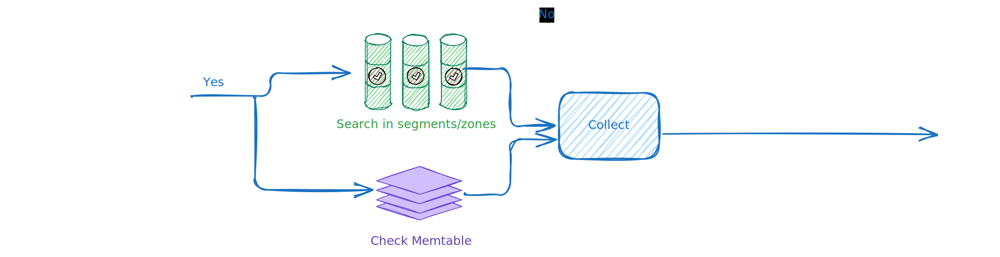
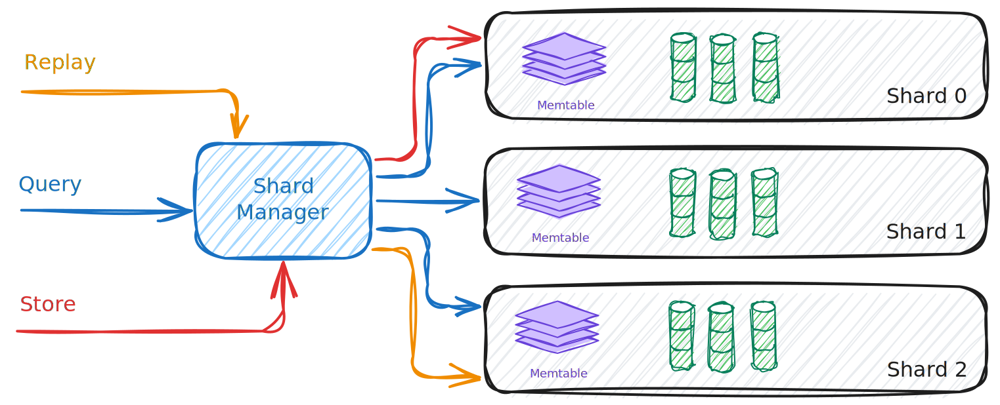

Quickstart
Installation
test command
Running SnelDB
The easiest way to get hands-on is the embedded Playground.
- Start SnelDB (dev config enables the Playground by default):
server.http_addr = "127.0.0.1:8085"[playground] enabled = true
- Open
http://127.0.0.1:8085/in your browser. - Type commands like:
DEFINE subscription FIELDS { "id": "int", "plan": "string" }
STORE subscription FOR ctx1 PAYLOAD {"id":1,"plan":"free"}
STORE subscription FOR ctx2 PAYLOAD {"id":2,"plan":"pro"}
QUERY subscription WHERE id=1
Notes
- The UI posts raw command lines to
POST /command(no JSON API required). - Set
server.output_formattotext(terminal-like),json, orarrow(Apache Arrow IPC stream). - To disable the Playground, set
[playground] enabled = false.
A Gentle Guide for Engineers
SnelDB is built to be small and simple. It keeps track of what happened, in order, and makes it easy to get those facts back out quickly. That’s it. This guide will walk you through how to think about events, how to design them so they’re useful, and how to use SnelDB’s tiny set of commands—DEFINE, STORE, QUERY, and REPLAY. Along the way we’ll use a retail shop as an example, but the same ideas apply in many domains.
Quick start: the easiest way to try SnelDB is to open the embedded Playground at
http://127.0.0.1:8085/(enabled by default in dev). Type commands directly and see results immediately.
Why events?
An event is just a record that something happened: an order was created, a customer signed up, a parcel was delivered. Events don’t change once they’re stored. By keeping them all, you get a trustworthy history. Your application can look back, replay them, and figure out the current state whenever it needs. SnelDB focuses on storing these events and letting you fetch them again quickly. The “what do these events mean?” part stays in your application.
Two ways of reading
With SnelDB, there are really only two ways you read:
-
Replay a timeline for one thing. All the events for a single
context_id(like an order, a customer, or a device) form a story. If youREPLAY FOR order-9001, you’ll see every event for that order in sequence. Your code can fold those into the current state. -
Query across many things. Sometimes you don’t want the whole story of one order, you want a slice across all orders. For that, you use
QUERY. For example:QUERY order_created WHERE status="submitted". Behind the scenes, SnelDB uses tricks like enum bitmaps and filters to make those queries quick, so you don’t have to think about indexes.
If you remember one thing: replay for one thing’s story, query for slices across many things.
Choosing a context
So what is this context_id? Think of it as “whose story am I telling?” For a retail system:
- An order has a start and an end, so it makes sense to use
order-<id>as the context. - Inventory belongs to a SKU, so
sku-<code>is a context. - A customer profile belongs to a customer, so
customer-<id>works.
When you want to be able to say “show me everything that ever happened to X”, that X should be a context.
Designing an event
Name events the way you’d explain them to a teammate: order_created, customer_registered, shipment_delivered. Keep the payload small and clear. Always include:
- The IDs you’ll need to filter by later (
order_id,customer_id,sku). - Enums for fixed sets of values. For example:
"plan": ["basic", "pro", "enterprise"] - A timestamp for when it happened.
Here are a few examples:
DEFINE customer_registered FIELDS {
"customer_id":"string",
"email":"string",
"plan":["basic","pro","enterprise"],
"created_at":"timestamp"
}
DEFINE order_created FIELDS {
"order_id":"string",
"customer_id":"string",
"status":["pending","submitted","cancelled"],
"created_at":"timestamp"
}
DEFINE shipment_delivered FIELDS {
"shipment_id":"string",
"order_id":"string",
"carrier":["UPS","DHL","FedEx"],
"delivered_at":"timestamp"
}
Storing events
The very first need is to record facts: something happened, and you want to keep it. Writing an event in SnelDB is just that—adding a new fact to the timeline.
STORE customer_registered FOR customer-123
PAYLOAD {"customer_id":"123","email":"a@b.com","plan":"pro"}
STORE order_created FOR order-9001
PAYLOAD {"order_id":"9001","customer_id":"123","status":"pending"}
STORE shipment_delivered FOR ship-5001
PAYLOAD {"shipment_id":"5001","order_id":"9001","carrier":"UPS"}
Later on, when dealing with retries or external systems, you might add optional fields like idempotency_key. But the heart of storing events is simply: write down the fact.
Reading events
If you want to know the current state of one thing, replay its story:
REPLAY FOR order-9001
If you want to know which events match a condition across many things, query:
QUERY order_created WHERE customer_id="123"
If you need to follow a chain—like from an order to its shipment—query by the keys you included in the payload:
QUERY shipment_delivered WHERE order_id="9001"
How to evolve
SnelDB is built on immutability. Once an event is stored it never changes. If the shape of an event needs to change, we don’t edit old events or add fields onto them. Instead, we create a new version of the schema or define a new event type that represents the new shape.
Older events remain valid and replayable; newer ones follow the updated schema. This way, every event clearly shows which version of the schema it follows, and your code can handle old and new versions side by side. Immutability guarantees that history is stable, while evolution ensures you can keep writing new chapters without breaking the old ones.
Scaling without extra knobs
You don’t manage indexes or query planners. You simply design your events with the right fields. SnelDB takes care of compression and filtering internally. If a query feels heavy, ask yourself: did I include the right key in the payload?
Streaming
If you need near‑real‑time processing, you don’t need a new command. Just poll with SINCE on your timestamp:
QUERY order_created WHERE created_at >= "2025-09-07T00:00:00Z" LIMIT 1000
Keep track of the last event you saw in your application and continue from there.
Other domains
- Billing: replay a subscription’s events to learn its current plan; query invoices or payments by
customer_id. - IoT: replay one device’s events to see its config; query telemetry since last night.
- Logistics: replay one parcel’s journey; query all parcels delivered today.
What SnelDB won’t do
SnelDB will never enforce your workflows, run aggregates, or decide who is allowed to see data. Those belong in your application or other tools. SnelDB’s job is narrower: keep facts safe, and give them back quickly.
A closing picture
Think of two simple moves:
- Down: replay the whole story for one thing.
- Across: query slices across many things.
Nearly everything you need can be done by combining these two moves. The database is small on purpose. If you design your events carefully, SnelDB will give you speed and reliability without ever getting in your way.
SnelDB Design Philosophy
Hassle-free by design
SnelDB is small on purpose. You don’t need to learn dozens of commands, fiddle with query planners, or manage indexes. Four simple verbs—DEFINE, STORE, QUERY, REPLAY—cover almost everything you need. Less to remember, less to break.
Immutability at the core
Facts don’t change once written. Immutability makes your history reliable and auditable. If things evolve, you add new event types or new schema versions. Old events remain intact; new ones live alongside them.
Evolution over correction
Rather than patching or rewriting, you let the story grow. Each new event is another page in the log. That makes timelines honest, reproducible, and easy to debug.
Performance without knobs
SnelDB is built for performance, but you don’t need to manage any of it. Internally, it uses shards to spread load, an LSM-tree design to keep writes fast, and columnar storage with enum bitmaps and XOR filters to make queries efficient. You never have to tune these parts yourself—they just work in the background so you can focus on your application.
Universal patterns
Two simple movements cover most use cases:
- Replay one context’s timeline to rebuild its state.
- Query across many contexts with filters.
This model is the same whether you’re preparing order data in retail, collecting device signals in IoT, managing subscriptions in SaaS, or feeding clean event streams into data and AI/ML teams for training and analysis.
Staying in its lane
SnelDB doesn’t do business logic, aggregations, or access control. Those belong in your services and tools. The database’s job is to keep track of everything faithfully and give it back quickly.
Introduction
SnelDB is a lightweight, high‑performance database for immutable events. You append facts, then filter or replay them—quickly and reliably.
What it is
- Store: append events with a type, context_id, timestamp, and payload
- Query: filter by event type, context, time, and conditions
- Sequence queries: find events that occur in order for the same entity
- Replay: stream events for a context in original order
DEFINE payment FIELDS {"amount":"int","status":"string"}
STORE payment FOR user-123 PAYLOAD {"amount":250,"status":"verified"}
QUERY payment WHERE status="verified"
QUERY page_view FOLLOWED BY order_created LINKED BY user_id
REPLAY FOR user-123
Why it exists
General-purpose databases and queues struggle with large, evolving event logs. SnelDB is built for:
- Immutable, append-only data
- Fast filtering at scale (columnar + pruning)
- Ordered replay per context
- Minimal ops overhead
Key features
- Append-only storage (perfect audit trails; predictable recovery)
- Simple, human‑readable commands (JSON‑native)
- Fast queries at scale (shards, zones, compaction)
- Sequence matching (find ordered event pairs for funnel analysis and conversion tracking)
- Modern temporal indexing (per-field calendars and slabbed temporal indexes)
- Replay built in (time‑travel debugging, sequence modeling)
- Flexible schemas (strict validation; optional fields)
- Lightweight & safe (Rust; embeddable; no GC)
Who it’s for
- Product analytics and auditing
- ML pipelines on event sequences
- Operational debugging and timeline reconstruction
Why SnelDB?
Most databases were never built for events.
They’re optimized for records that change: customer profiles, inventory counts, order statuses. But in the real world, especially in modern systems and data pipelines, we’re dealing more and more with things that happened — not things that are.
- A user signed up.
- A sensor pinged.
- A document was approved.
- A model prediction was stored.
These aren’t updates. They’re facts. Immutable. Time-stamped. Contextual.
The gap
If you’ve tried to build on top of these kinds of events, you’ve probably run into one of these:
- Slow queries over millions of records because you’re using a general-purpose SQL database
- Too much ceremony, it’s painful to rebuild a timeline of actions (what happened, when, and in what order)
- Custom tooling just to read back historical behavior
- Mixing logs and storage (Kafka for ingest, S3 for storage, Athena for queries… and duct tape in between)
- Hard to filter, trace, or correlate things once the data grows
And if you work in AI or data science, you’ve probably dealt with brittle pipelines, long joins, and the question:
“How do I get all the events for this user/session/date range — and trust the output?”
The idea
SnelDB was born to make event-driven storage and retrieval feel natural — for developers, data engineers, and model builders alike.
It’s a database designed from scratch for:
- Immutable, append-only data
- High-throughput ingest
- Fast filtering and replay
- Event-type-aware columnar storage
- Schema evolution without migrations
- Minimal operational overhead
You store events. You query them. You replay them. That’s it. It does the rest — segmenting, zoning, indexing, compaction — in the background.
Why not just use X?
- Kafka? Great for streaming, not for historical querying.
- PostgreSQL? Fantastic RDBMS, but not built for multi-billion-row event logs.
- Snowflake? Powerful, but heavy and expensive for interactive filtering.
- ClickHouse? Blazing fast, but not optimized for replay semantics and evolving schemas.
SnelDB is a sweet spot: light like SQLite, fast like ClickHouse, event-native like Kafka — but simple to reason about.
Built for builders
Whether you’re:
- Building product analytics dashboards from raw event logs
- Tracking user behavior over time, across sessions or contexts
- Training machine learning models on real-world event sequences
- Auditing critical flows or investigating anomalies
- Archiving time-stamped data for compliance or reporting
- Creating time-travel debugging tools or operational replay systems
SnelDB gives you a clean, reliable foundation to work with immutable facts — fast to store, easy to query, and simple to reason about.
Simple to embed. Easy to query. Scales with clarity.
That’s why we built SnelDB.
Stories from the field
To see why SnelDB exists, it helps to look at a few real situations where traditional tools fall short.
-
Product analytics at scale A growing SaaS company wants to track how users move through their app. At first, PostgreSQL is fine. But soon the tables balloon into billions of rows. Queries slow to a crawl, analysts create brittle pipelines, and nobody fully trusts the numbers. With SnelDB, they could store clean, immutable event streams, filter them quickly by context, and build dashboards that actually stay fast as volume grows.
-
Machine learning pipelines A data science team trains fraud detection models using transaction histories. They struggle to rebuild consistent training sets: data is scattered across Kafka topics, S3 buckets, and ad-hoc SQL queries. With SnelDB, they can reliably fetch “all sequences of events leading to flagged outcomes,” ensuring reproducibility and shortening the path from raw logs to usable training data.
-
Auditing in regulated industries A fintech startup needs to prove to auditors what happened, when, and by whom. Traditional databases allow updates and deletes, which introduces doubt. SnelDB’s append-only design guarantees that past events remain untouched, making it straightforward to demonstrate compliance with minimal operational effort.
-
Operational debugging An infrastructure engineer gets paged at 2am for a production outage. Logs are rotated, metrics are sampled, and the picture is incomplete. With SnelDB, they can replay the exact sequence of system events leading up to the failure, reconstruct the timeline, and pinpoint the root cause without guesswork.
What is SnelDB?
SnelDB is a lightweight, high-performance database designed for immutable events.
At its core, it’s a system where you can:
- Store events in an append-only fashion
- Query them efficiently by type, context, or time
- Replay them in order to understand what happened
That’s it. No updates. No deletes. Just fast, reliable access to a growing stream of facts.
Not your average database
SnelDB is not a general-purpose relational database, a message broker, or a data lake. It’s a specialized tool focused on event-driven data:
- Unlike a relational database, SnelDB doesn’t model changing rows. It treats data as a log of things that happened.
- Unlike a message queue, it’s built for storage and querying, not just delivery.
- Unlike a data warehouse, it’s lightweight and easy to embed in everyday applications.
Think of it as a database that embraces time and immutability as first-class concepts.
A mental model
The easiest way to think about SnelDB is:
- A notebook for your system’s history: every line is a fact, recorded once, never erased.
- A timeline you can slice and filter: events are grouped by type, context, and time, so you can quickly zoom in.
- A replay button: if you need to reconstruct a past sequence, you can ask SnelDB to play it back in order.
A simple example
Imagine you’re building a payments system.
You might store events like:
{ "event_type": "payment_initiated", "context_id": "user_123", "payload" : { "amount": 100 }, "timestamp": "2025-08-20T09:30:00Z" }
{ "event_type": "payment_verified", "context_id": "user_123", "payload" : { "amount": 100 }, "timestamp": "2025-08-20T09:31:00Z" }
{ "event_type": "payment_settled", "context_id": "user_123", "payload" : { "amount": 100 }, "timestamp": "2025-08-20T09:35:00Z" }
Later, you might want to:
- Fetch all payment_initiated events from last week
- Replay all events for
user_123in order - Filter for verified payments over
$500
And maybe even more:
- Compare the average settlement time for all payments last month
- Find all users who initiated a payment but never settled
- Retrieve the full sequence of events for a disputed transaction
- Generate a distribution of payment amounts across different countries
- Train a model using all past transactions, keeping the exact order of events intact
In a traditional setup, you’d stitch together logs, SQL queries, and custom scripts. With SnelDB, these queries are first-class citizens. For example:
QUERY payment_initiated SINCE 2025-08-01
or:
REPLAY FOR user_123
even like:
QUERY payment_verified WHERE amount > 500
or find sequences:
QUERY payment_initiated FOLLOWED BY payment_settled LINKED BY user_id
Instead of thinking in terms of tables and joins, you think in terms of events. SnelDB is designed so the way you ask matches the way you think: “What happened? When? For whom? What happened next?”
Key Features
SnelDB is small in surface area but powerful in practice. Here are the highlights that make it different:
1. Append-only storage
Events are immutable. Once stored, they’re never updated or deleted — which means:
- Perfect audit trails
- Predictable replay of past behavior
- No risk of hidden mutations breaking analysis
2. Simple, human-readable commands
No SQL boilerplate. No obscure APIs. SnelDB has a compact command language that reads like plain English:
DEFINE payment FIELDS { "amount": "int", "status": "string" }
STORE payment FOR user-123 PAYLOAD {"amount": 250, "status":"verified"}
QUERY payment WHERE status="verified"
REPLAY FOR user-123
Fast to learn. Easy to remember. Case-insensitive and JSON-native.
3. Fast queries at scale
Under the hood, SnelDB uses an LSM-tree design with:
- Shards for parallelism
- Zones and filters to skip irrelevant data
- Compaction to keep reads efficient over time
The result: queries stay snappy whether you have thousands or billions of events.
4. Replay built in
You don’t just query — you can replay events in order:
REPLAY order_created FOR customer-42
This makes debugging, time-travel analysis, and sequence modeling natural parts of the workflow.
4.5. Sequence matching
Find events that occur in a specific order for the same entity:
QUERY page_view FOLLOWED BY order_created LINKED BY user_id WHERE page_view.page="/checkout"
Perfect for funnel analysis, conversion tracking, and understanding event dependencies. SnelDB uses efficient columnar processing and two-pointer algorithms to match sequences without materializing events.
5. Flexible schemas
SnelDB supports schema definitions per event type, with:
- Strict validation: payloads must match fields
- Optional fields: declared as string | null
- Clear errors when something doesn’t line up
This keeps data trustworthy without slowing you down.
6. Designed for AI & analytics
Because events are ordered, immutable, and replayable, SnelDB is a natural fit for:
- Training models on real-world sequences
- Feeding pipelines with reproducible datasets
- Analyzing behavior over time without complex joins
- Auditing decision processes with confidence
7. Lightweight & embeddable
SnelDB is written in Rust with minimal dependencies. It runs anywhere — from a laptop dev setup to production servers — without heavyweight orchestration.
You can drop it into your stack as a focused, reliable event database.
Built-in Playground
SnelDB ships with a tiny single-page Playground so you can try commands without any client code.
Start the server and open http://127.0.0.1:8085/ to experiment with DEFINE, STORE, QUERY, and REPLAY instantly.
8. Safety by design
SnelDB is built in Rust, which brings memory safety, thread safety, and performance without garbage collection.
This means:
- No segfaults or memory leaks corrupting your data
- Concurrency without data races
- Predictable performance, even under load
When you’re storing critical events, safety is not optional — and Rust helps guarantee it from the ground up.
In short: SnelDB is designed to be small but sharp — a tool that does one thing well: make working with immutable events simple, fast, and reliable.
Commands
SnelDB has a compact, human-friendly command language. Keywords are case-insensitive (store, STORE, StOrE all work). Event type names and context IDs are case-preserving.
Core verbs:
DEFINE— declare a schema for an event typeSTORE— append a new event with a JSON payloadQUERY— filter eventsREPLAY— stream events in original order (per context, optionally per type)FLUSH— force a memtable → segment flushPING— health check
User management:
CREATE USER— create a new authentication userREVOKE KEY— revoke a user’s authentication keyLIST USERS— list all registered users
If a command returns no rows, you’ll see: No matching events found.
See pages below for full syntax and examples.
Syntax & Operators
Command forms
DEFINE <event_type> FIELDS { "key": "type", … }
STORE <event_type> FOR <context_id> PAYLOAD <json_object>
QUERY <event_type> [FOR <context_id>] [SINCE <ts>] [USING <time_field>] [WHERE <expr>] [LIMIT <n>]
QUERY <event_type_a> [FOLLOWED BY|PRECEDED BY] <event_type_b> LINKED BY <link_field> [WHERE <expr>] [LIMIT <n>]
REPLAY [<event_type>] FOR <context_id> [SINCE <ts>] [USING <time_field>]
FLUSH
- Keywords: case-insensitive.
- Literals:
- Strings: double-quoted (
"NL","a string"). - Numbers: unquoted (
42,3,900). - Booleans:
true,false(unquoted).
- Strings: double-quoted (
- WHERE operators:
=,!=,>,>=,<,<=,AND,OR,NOT. - Precedence:
NOT>AND>OR. Use parentheses sparingly by structuring conditions; (parentheses not required in current grammar). - LIMIT: positive integer; caps returned rows.
- SINCE: ISO-8601 timestamp string (e.g.,
2025-08-01T00:00:00Z) or numeric epoch (s/ms/µs/ns). Parsed and normalized to epoch seconds (fractional parts truncated to whole seconds). - USING: Selects the time field used by SINCE and bucketing; defaults to core
timestamp. Common choices: a schema field likecreated_atdeclared as"datetime".
Mini-grammar (informal)
expr := cmp | NOT expr | expr AND expr | expr OR expr
cmp :=
op := = | != | > | >= | < | <=
value := string | number | boolean
Examples
DEFINE order_created AS 1 FIELDS {
id: "uuid",
amount: "float",
currency: "string",
created_at: "datetime"
}
STORE order_created FOR ctx_123 PAYLOAD {
"id": "a1-b2",
"amount": 42.5,
"currency": "EUR",
"created_at": "2025-09-07T12:00:00Z"
}
QUERY order_created FOR "ctx_123" SINCE "2025-08-01T00:00:00Z" USING created_at
WHERE amount >= 40 AND currency = "EUR"
LIMIT 100
QUERY page_view FOLLOWED BY order_created LINKED BY user_id WHERE page_view.page="/checkout"
REPLAY order_created FOR ctx_123 SINCE "2025-08-01T00:00:00Z" USING created_at
DEFINE
Purpose
Register the schema for an event type. STORE payloads must conform to this schema.
Form
DEFINE <event_type:WORD> [ AS <version:NUMBER> ] FIELDS { "key_1": "type_1", ... }
Constraints
- Requires authentication and admin role.
Field pairs
- Keys can be STRING or WORD. The parser will quote WORD keys when converting to JSON.
- Values (types) can be:
- STRING literals, for example: “int”, “string”, “string | null”
- Special logical time types:
- “datetime” → event time instant; payload accepts ISO-8601 strings or epoch (s/ms/µs/ns) and is normalized to epoch seconds
- “date” → calendar date; payload accepts “YYYY-MM-DD” (midnight UTC) or epoch and is normalized to epoch seconds
- ARRAY of strings to define an enum, for example: [“pro”, “basic”]
- Enum variants are case-sensitive (“Pro” != “pro”)
- Schema must be flat (no nested objects).
Examples
DEFINE order_created FIELDS { "order_id": "int", "status": "string" }
DEFINE review FIELDS { rating: "int", verified: "bool" }
DEFINE order_created AS 2 FIELDS { order_id: "int", status: "string", note: "string | null" }
DEFINE subscription FIELDS { plan: ["pro", "basic"] }
DEFINE product FIELDS { name: "string", created_at: "datetime", release_date: "date" }
Errors
Authentication required: No user ID provided or authentication failed.Only admin users can define schemas: The authenticated user is not an admin.
Typical validation errors raised during STORE
- No schema defined
- Missing field
statusin payload - Field
order_idis expected to be one ofint, but gotString - Payload contains fields not defined in schema: invalid_field
Store
Purpose
Append an event for a specific context.
Form
STORE <event_type:WORD> FOR <context_id:WORD or STRING> PAYLOAD {"key":"value", ...}
Constraints
<context_id>can be a WORD (example: user-1) or a quoted STRING.PAYLOADmust be a flat JSON object (no nested objects).PAYLOADmust follow schema defined usingDEFINEcommand.- Requires authentication and write permission for the event type (or appropriate role:
admin,editor, orwrite-only).
Examples
STORE order_created FOR customer-1 PAYLOAD {"order_id":123,"status":"confirmed"}
STORE review FOR "user:ext:42" PAYLOAD {"rating":5,"verified":true}
STORE login FOR user-7 PAYLOAD {"device":"android"}
Behavior
- Validates payload against the schema of the event type.
- Rejects missing or extra fields and type mismatches.
- Durability-first: once acknowledged, the event will survive crashes.
Errors
<event_type>cannot be empty<context_id>cannot be empty- Schema validation errors (see
DEFINE) Authentication required: No user ID provided or authentication failedWrite permission denied for event type '<event_type>': User lacks write permission for the event type and does not have an appropriate role (admin,editor, orwrite-only)- Overload/backpressure (rare): Shard is busy, try again later
QUERY
Purpose
Filter events by type, optionally by context, time, predicate, and limit.
Form
QUERY <event_type:WORD>
[ FOR <context_id:WORD or STRING> ]
[ SINCE <timestamp:STRING_OR_NUMBER> ]
[ USING <time_field:WORD> ]
[ RETURN [ <field:WORD or STRING>, ... ] ]
[ WHERE <expr> ]
[ <aggregations> ]
[ PER <time_granularity: HOUR|DAY|WEEK|MONTH> [ USING <time_field:WORD> ] ]
[ BY <field> [, <field> ...] [ USING <time_field:WORD> ] ]
[ LIMIT <n:NUMBER> ]
Constraints
- Requires authentication and read permission for the event type (or appropriate role:
admin,read-only/viewer, oreditor).
Examples
QUERY order_created WHERE status="confirmed"
QUERY order_created WHERE status=confirmed
QUERY order_created WHERE id > 13 AND id < 15
QUERY order_created WHERE country!="NL"
QUERY order_created WHERE country="NL" OR country="FR"
QUERY order_created WHERE id IN (1, 2, 3)
QUERY order_created WHERE (status = "active" OR status = "pending") AND priority > 5
QUERY order_created WHERE NOT status = "cancelled"
QUERY payment SINCE "2025-08-01T00:00:00Z" WHERE amount >= 500 LIMIT 100
QUERY orders SINCE 1735689600000 USING created_at WHERE amount >= 10
# SINCE accepts ISO-8601 strings or numeric epoch in s/ms/µs/ns; all normalized to seconds
QUERY product RETURN [name, "price"] WHERE price > 10
Aggregations
# Count all orders
QUERY orders COUNT
# Count unique contexts (users) per country
QUERY orders COUNT UNIQUE context_id BY country
# Sum and average amount by day using created_at field
QUERY orders TOTAL amount, AVG amount PER DAY USING created_at
# Multiple metrics with grouping
QUERY orders COUNT, TOTAL amount, AVG amount BY country
# Min/Max over comparable fields
QUERY orders MIN amount, MAX amount BY country
Notes
SINCEaccepts ISO-8601 strings (e.g.,2025-01-01T00:00:00Z) or numeric epoch in seconds, milliseconds, microseconds, or nanoseconds. Inputs are normalized to epoch seconds.USING <time_field>makesSINCEand temporal pruning use a payload datetime field (e.g.,created_at). Defaults to the coretimestampfield.RETURN [ ... ]limits the payload fields included in results. Omit to return all payload fields. An empty listRETURN []also returns all payload fields.- Field names in
RETURNcan be bare words or quoted strings. - Works across in-memory and on-disk segments.
- If nothing matches, returns: No matching events found.
INoperator:WHERE id IN (1, 2, 3)is equivalent toWHERE id = 1 OR id = 2 OR id = 3. Each value uses zone indexes for efficient pruning.- Parentheses: Complex WHERE clauses with parentheses are supported. Example:
WHERE (status = "active" OR status = "pending") AND priority > 5. NOToperator:WHERE NOT status = "cancelled"returns all events except those matching the condition. Supports De Morgan’s laws for complex expressions likeNOT (A AND B)andNOT (A OR B).
Aggregation notes
- Aggregations are requested via one or more of:
COUNT,COUNT UNIQUE <field>,COUNT <field>,TOTAL <field>,AVG <field>,MIN <field>,MAX <field>. - Optional
BY <fields...>groups results by one or more payload fields. - Optional
PER <HOUR|DAY|WEEK|MONTH>buckets results by the chosen time field. You can select the time field for bucketing withUSING <time_field>; default istimestamp. LIMITon aggregation caps the number of distinct groups produced (it does not limit events scanned within those groups).- Aggregations return a tabular result with columns: optional
bucket, grouped fields, followed by metric columns likecount,total_<field>,avg_<field>,min_<field>,max_<field>.
Sequence Queries
SnelDB supports sequence matching queries that find events that occur in a specific order for the same entity. This is perfect for funnel analysis, conversion tracking, and understanding event dependencies.
Basic Form
QUERY <event_type_a> FOLLOWED BY <event_type_b> LINKED BY <link_field>
QUERY <event_type_a> PRECEDED BY <event_type_b> LINKED BY <link_field>
Concepts
- FOLLOWED BY: Finds events where
event_type_boccurs afterevent_type_ain time - PRECEDED BY: Finds events where
event_type_boccurred beforeevent_type_ain time - LINKED BY: Defines the field that connects events together (e.g.,
user_id,order_id,session_id)
Examples
Funnel analysis: Find users who viewed the checkout page and then created an order:
QUERY page_view FOLLOWED BY order_created LINKED BY user_id
With WHERE clause: Only count checkout page views:
QUERY page_view FOLLOWED BY order_created LINKED BY user_id WHERE page_view.page="/checkout"
Event-specific filters: Filter both events in the sequence:
QUERY page_view FOLLOWED BY order_created LINKED BY user_id
WHERE page_view.page="/checkout" AND order_created.status="done"
PRECEDED BY: Find orders that were preceded by a payment failure:
QUERY order_created PRECEDED BY payment_failed LINKED BY user_id WHERE order_created.status="done"
Avoiding ambiguity: If both event types have the same field name, use event-prefixed fields:
# This will return 400 Bad Request if both order_created and payment_failed have a "status" field
QUERY order_created PRECEDED BY payment_failed LINKED BY user_id WHERE status="done"
# Use event-prefixed fields to disambiguate
QUERY order_created PRECEDED BY payment_failed LINKED BY user_id WHERE order_created.status="done"
Different link fields: Use order_id instead of user_id:
QUERY order_created FOLLOWED BY order_cancelled LINKED BY order_id
How It Works
- Grouping: Events are grouped by the
link_fieldvalue (e.g., all events foruser_id="u1"are grouped together) - Sorting: Within each group, events are sorted by timestamp
- Matching: The two-pointer algorithm finds matching sequences efficiently
- Filtering: WHERE clauses are applied before matching to reduce the search space
WHERE Clause Behavior
- Event-prefixed fields: Use
event_type.fieldto filter specific events (e.g.,page_view.page="/checkout") - Common fields: Fields without a prefix apply to all events (e.g.,
timestamp > 1000) - Combined: You can mix event-specific and common filters with
AND/OR - Ambiguity detection: If a common field (without event prefix) exists in multiple event types within the sequence, the query will return a
400 Bad Requesterror. Use event-prefixed fields to disambiguate (e.g.,order_created.status="done"instead ofstatus="done"when bothorder_createdandpayment_failedhave astatusfield)
Performance
Sequence queries are optimized for performance:
- Columnar processing: Events are processed in columnar format without materialization
- Early filtering: WHERE clauses are applied before grouping and matching
- Parallel collection: Zones for different event types are collected in parallel
- Index usage: Existing indexes on
link_fieldandevent_typeare leveraged
Notes
- Both events in the sequence must have the same value for the
link_field - For
FOLLOWED BY,event_type_bmust occur at the same timestamp or later thanevent_type_a - For
PRECEDED BY,event_type_bmust occur strictly beforeevent_type_a(same timestamp does not match) - The query returns both events from each matched sequence
LIMITapplies to the number of matched sequences, not individual events
Errors
Authentication required: No user ID provided or authentication failed.Read permission denied for event type '<event_type>': User lacks read permission for the event type.
Gotchas
- Field names used in
WHEREmust exist in the schema for that event type. - Strings must be double-quoted when you need explicit string literals.
- Unknown fields in
RETURNare ignored; only schema-defined payload fields (plus core fieldscontext_id,event_type,timestamp) are returned. - Temporal literals in
WHERE(e.g., `created_at = “2025-01-01T00:00:01Z”) are parsed and normalized to epoch seconds. Fractional seconds are truncated; ranges using only sub-second differences may collapse to empty after normalization. - In sequence queries, the
link_fieldmust exist in both event types’ schemas. - In sequence queries, if a WHERE clause uses a common field (without event prefix) that exists in multiple event types, you must use event-prefixed fields to disambiguate. For example, if both
order_createdandpayment_failedhave astatusfield, useorder_created.status="done"instead ofstatus="done"to avoid ambiguity errors.
REPLAY
Purpose
Stream events back in their original append order for a context, optionally restricted to one event type.
Form
REPLAY [ <event_type:WORD> ]
FOR <context_id:WORD or STRING>
[ SINCE <timestamp:STRING> ]
[ RETURN [ <field:WORD or STRING>, ... ] ]
Variants
- All event types:
REPLAY FOR <context_id>
- Only specific event types:
REPLAY <event_type> FOR <context_id>
Examples
REPLAY FOR alice
REPLAY order_shipped FOR customer-99
REPLAY FOR "user:ext:42" SINCE "2025-08-20T09:00:00Z"
REPLAY product FOR user-1 RETURN ["name"]
Behavior
- Routes to the shard owning the context ID.
- Preserves original order.
- If nothing matches: No matching events found.
RETURN [ ... ]limits payload fields in the replayed events. Omit or useRETURN []to include all payload fields. Unknown fields are ignored; core fields (context_id,event_type,timestamp) are always present.
Flush
Purpose
Force a memtable flush into an immutable segment.
Form
FLUSH
Notes
Useful for tests, checkpoints, or when you want on-disk segments immediately. Not required for correctness; ingestion continues during flush.
Remember
Purpose
Materialize the results of a streaming-compatible QUERY under a durable alias so future readers can replay the stored snapshot without re-scanning the cluster.
Form
REMEMBER QUERY <query-expr> AS <name>
<query-expr>must be a plainQUERYcommand that already works at the shell prompt.<name>becomes the filename-friendly alias used undermaterializations/<name>/.
Constraints
- Aliases may contain ASCII letters, digits,
_, and-only. - Only selection queries without aggregates, grouping, or event sequences can be remembered (the same restriction as streaming queries).
- The first run performs a full scan; ensure the backend has enough disk for the snapshot.
Behavior
- The query plan is compiled and executed once through the streaming pipeline.
- Batches are persisted to
materializations/<name>/frames/NNNNNN.matusing the same column ordering and types as the live query. - A catalog entry (
materializations/catalog.bin) records:- Canonical query hash and serialized query spec.
- Stored schema snapshot.
- Current row and byte totals.
- High-water mark (timestamp + event_id) used for future incremental refreshes.
- Last append deltas (rows/bytes) and timestamps.
- Optional retention policy placeholder (future feature).
- A short summary (rows stored, bytes, watermark age) is returned to the caller.
Retention
Each remembered query can optionally track a retention policy (max rows or max age). Policies are recorded in the catalog for future use; the current implementation records the fields and prunes frames when they are set programmatically.
Diagnostics & Telemetry
- Successful runs log a
sneldb::rememberevent with alias, total rows, rows appended, and watermark details. - You can inspect
materializations/catalog.bin(bincode + JSON-encoded spec) to review metadata, or issueSHOW <name>to fetch both the stored snapshot and the latest delta.
Errors
- Alias already exists.
- Query is not streaming-compatible.
- Engine is unable to write the materialization directory (disk full / permission).
- Catalog persistence failure (corrupted header or serialization error).
Show
Purpose
Stream the materialized results of a remembered query, replaying the stored snapshot and appending the latest delta in a single response.
Form
SHOW <name>
<name>must correspond to an existing materialization created withREMEMBER QUERY … AS <name>.
Behavior
- Loads the catalog entry and opens
materializations/<name>/. - Streams previously stored frames into the response using the same column layout recorded at remember-time.
- Builds an incremental query by appending
WHERE <time_field> > last_timestamp OR (<time_field> = last_timestamp AND event_id > last_event_id), where<time_field>defaults totimestampunless the original query specifiedUSING <time_field>. - Runs the incremental query through the streaming pipeline.
- Forks each delta batch to the client response and to the materialized store, extending the snapshot on disk.
- Updates the catalog with the new high-water mark, total rows/bytes, and last append deltas.
- Logs a
sneldb::showtelemetry event summarizing counts, bytes, and watermark age.
Output Format
SHOW reuses the streaming response format (schema header + row fragments) used by QUERY when streaming is enabled. Any client capable of consuming streaming query output can process a SHOW response without modification.
Retention
If a retention policy (max rows / max age) is recorded in the catalog, the store will prune older frames after the delta append completes. Policies can be set programmatically via admin tooling; placeholders are stored for future command-level configuration.
Errors
- Unknown materialization name.
- Stored schema missing or corrupted.
- Disk I/O failure while reading existing frames or appending delta batches.
- Incremental query fails (e.g., schema evolution removed required fields).
Operational Notes
- The catalog (
materializations/catalog.bin) is persisted with a binary header and JSON-encoded query spec. Deleting the file removes all metadata; individual materializations can be dropped by removing both the directory and the catalog entry. - High-water mark age is included in logs to help detect stale materializations that are not being refreshed.
User Management
Purpose
SnelDB provides authentication and authorization through HMAC-based signatures and session tokens. User management commands allow you to create users, revoke their access keys, list all registered users, and manage fine-grained permissions for event types.
SnelDB uses a two-tier access control system:
- Roles: Broad privileges (e.g., “can read everything”, “can write everything”)
- Permissions: Fine-grained access per event type (e.g., “can read orders”, “can write payments”)
Important: Permissions override roles, but the behavior depends on what the permission grants or denies. If you have a read-only role but are granted write permission on a specific event type, you can write to that event type while still reading from your role. See Roles and Permissions for detailed examples.
All commands require authentication. SnelDB supports multiple authentication methods:
- Session tokens (recommended for high-throughput): Authenticate once with
AUTH, receive a token, then use it for subsequent commands - HMAC-SHA256 signatures: Sign each command with a user’s secret key
- Connection-scoped authentication: Authenticate once per connection, then send signed commands
User management commands (CREATE USER, REVOKE KEY, LIST USERS) and permission management commands (GRANT, REVOKE, SHOW PERMISSIONS) require admin privileges. This ensures that only authorized administrators can manage users and permissions.
Authentication Overview
SnelDB supports multiple authentication methods to suit different use cases:
-
Session Token Authentication: After authenticating with the
AUTHcommand, you receive a session token that can be reused for multiple commands without re-signing. This is optimized for high-throughput scenarios, especially WebSocket connections. -
HMAC-SHA256 Signature Authentication: Each user has a secret key that is used to sign commands. The signature proves that the command was issued by someone who knows the secret key. This can be done per-command (inline format) or connection-scoped (after AUTH command).
Authentication Formats
1. Session Token Authentication (Recommended for high-throughput):
After authenticating with the AUTH command, you receive a session token that can be used for subsequent commands:
AUTH user_id:signature
OK TOKEN <session_token>
Then use the token with subsequent commands:
STORE event_type FOR context_id PAYLOAD {...} TOKEN <session_token>
QUERY event_type WHERE field=value TOKEN <session_token>
- Tokens are session-based and expire after a configurable time (default: 5 minutes, configurable via
auth.session_token_expiry_seconds) - Tokens are 64-character hexadecimal strings (32 bytes)
- The token must be appended at the end of the command after
TOKEN - This method is optimized for high-throughput scenarios, especially WebSocket connections
- If a token is invalid or expired, the system falls back to other authentication methods
2. TCP/UNIX/WebSocket (after AUTH command, connection-scoped):
AUTH user_id:signature
signature:STORE event_type FOR context_id PAYLOAD {...}
3. TCP/UNIX/WebSocket (inline format, per-command):
user_id:signature:STORE event_type FOR context_id PAYLOAD {...}
4. HTTP (header-based):
X-Auth-User: user_id
X-Auth-Signature: signature
The signature is computed as: HMAC-SHA256(secret_key, message) where message is the command string being executed.
Note: WebSocket connections support all authentication formats (token, AUTH command, and inline format). Commands are sent as text messages over the WebSocket connection.
CREATE USER
Purpose
Create a new user with authentication credentials and optional roles. The user will receive a secret key that can be used to sign commands. Roles provide broad access privileges, while permissions provide fine-grained control per event type.
Form
CREATE USER <user_id:WORD or STRING> [ WITH KEY <secret_key:STRING> ] [ WITH ROLES [<role:STRING>[,<role:STRING>...]] ]
Constraints
<user_id>must be non-empty and contain only alphanumeric characters, underscores, or hyphens.<user_id>is case-sensitive (e.g.,user1≠User1).- If
WITH KEYis omitted, a random 64-character hexadecimal secret key is generated. - If
WITH KEYis provided, the secret key can contain any characters. WITH ROLESis optional. If omitted, the user has no roles (access controlled only by permissions).- Roles can be specified as string literals (e.g.,
"admin") or word identifiers (e.g.,admin). - Multiple roles can be specified in the array.
WITH KEYandWITH ROLEScan be specified in any order.- Requires admin authentication.
Supported Roles
SnelDB supports the following roles:
admin: Full system access. Can read/write all event types and manage users/permissions.read-onlyorviewer: Can read all event types, but cannot write. Useful for monitoring and analytics users.editor: Can read and write all event types, but cannot manage users or permissions. Useful for data entry users.write-only: Can write all event types, but cannot read. Useful for data ingestion services.
Note: Roles provide broad access, but specific permissions can override role-based access (see Roles and Permissions below).
Examples
CREATE USER api_client
Creates a user named api_client with no roles. Access is controlled entirely by permissions.
CREATE USER "service-account" WITH KEY "my_custom_secret_key_12345"
Creates a user with a custom secret key and no roles.
CREATE USER monitoring_service WITH KEY monitoring_key_2024 WITH ROLES ["read-only"]
Creates a read-only user for monitoring purposes. This user can read all event types but cannot write.
CREATE USER data_entry WITH ROLES ["editor"]
Creates an editor user who can read and write all event types.
CREATE USER admin_user WITH ROLES ["admin"]
Creates an admin user with full system access.
CREATE USER viewer WITH ROLES ["viewer"]
Creates a viewer user (alias for read-only role).
CREATE USER writer WITH ROLES ["write-only"]
Creates a write-only user who can write but not read.
CREATE USER multi_role WITH ROLES ["admin", "read-only"]
Creates a user with multiple roles. Admin role takes precedence.
CREATE USER api_client WITH KEY "secret" WITH ROLES ["read-only"]
Creates a user with both a custom key and a role. Order doesn’t matter.
CREATE USER api_client WITH ROLES ["read-only"] WITH KEY "secret"
Same as above, with roles and key in different order.
Behavior
- Validates the user ID format before creation.
- Checks if the user already exists (returns error if duplicate).
- Stores the user in the protected auth store (backed by
AuthWalStorage, a dedicated encrypted WAL file). - Caches the user credentials in memory for fast authentication lookups (auth checks are O(1)).
- Returns the secret key in the response (only shown once during creation).
Response Format
200 OK
User 'api_client' created
Secret key: a1b2c3d4e5f6...
Errors
Invalid user ID format: User ID contains invalid characters or is empty.User already exists: <user_id>: A user with this ID already exists.
REVOKE KEY
Purpose
Revoke a user’s authentication key by marking it as inactive. The user will no longer be able to authenticate commands, but their user record remains in the system.
Form
REVOKE KEY <user_id:WORD or STRING>
Examples
REVOKE KEY api_client
Revokes access for the api_client user.
REVOKE KEY "service-account"
Revokes access for a user with a hyphenated name (quotes required).
Behavior
- Marks the user’s key as inactive in both the database and in-memory cache.
- Previously authenticated connections may continue to work until they disconnect.
- The user record remains in the system for audit purposes.
- To restore access, you must create a new user with a different user ID (or implement key rotation in a future version).
- Requires admin authentication.
Response Format
200 OK
Key revoked for user 'api_client'
Errors
User not found: <user_id>: No user exists with the specified user ID.
LIST USERS
Purpose
List all registered users and their current status (active or inactive).
Form
LIST USERS
Examples
LIST USERS
Behavior
- Returns all users registered in the system.
- Shows each user’s ID and active status.
- Does not return secret keys (for security reasons).
- Results are returned from the in-memory cache for fast access.
- Requires admin authentication.
Auth Storage and Durability
- Isolation: User data is stored in a dedicated encrypted WAL file (
AuthWalStorage) and is not queryable through regular commands. The HTTP dispatcher rejects any__system_*context from user input to prevent access to system contexts. - Hot path: Authentication and authorization are served from in-memory caches (
UserCache,PermissionCache) for O(1) checks. - Durability: Mutations (create/revoke/grant/revoke permissions) append to a dedicated secured WAL (
.swal). Frames are binary, length-prefixed, CRC-checked, encrypted with ChaCha20Poly1305, and versioned with the standard storage header. Corrupted frames are skipped during replay instead of failing startup. - Replay: On startup, the auth WAL is replayed with “latest timestamp wins” semantics to rebuild the caches. The WAL is small because auth mutations are rare compared to data events.
- Configurable fsync cadence: The auth WAL flushes each write and fsyncs periodically; you can tune fsync frequency via the WAL settings (or override per storage instance) to balance throughput and durability.
- Encryption: Auth WAL payloads are encrypted (AEAD). Provide a 32-byte master key via
SNELDB_AUTH_WAL_KEY(64-char hex). If unset, a key is derived from the serverauth_token.
Response Format
200 OK
api_client: active
service-account: active
old_client: inactive
If no users exist:
200 OK
No users found
Notes
- Secret keys are never returned by this command.
- The list includes both active and inactive users.
- Results are ordered by user ID (implementation-dependent).
- Requires admin authentication.
GRANT
Purpose
Grant read and/or write permissions to a user for specific event types. Permissions control which users can query (read) or store (write) events of a given type.
Form
GRANT <permissions:READ[,WRITE] or WRITE[,READ]> ON <event_type:WORD or STRING>[,<event_type:WORD or STRING>...] TO <user_id:WORD or STRING>
Constraints
- Permissions must be
READ,WRITE, or both (READ,WRITEorWRITE,READ). - Event types must be defined using the
DEFINEcommand before permissions can be granted. - Multiple event types can be specified, separated by commas.
- Only admin users can grant permissions.
Examples
GRANT READ ON orders TO api_client
Grants read-only access to the orders event type for api_client.
GRANT WRITE ON orders TO api_client
Grants write-only access to the orders event type for api_client.
GRANT READ, WRITE ON orders TO api_client
Grants both read and write access to the orders event type for api_client.
GRANT READ, WRITE ON orders, products TO api_client
Grants read and write access to both orders and products event types for api_client.
Behavior
- Validates that the event type exists in the schema registry.
- Merges with existing permissions (grant adds permissions, doesn’t remove existing ones).
- Updates permissions in both the database and in-memory cache for fast lookups.
- Permissions take effect immediately for new commands.
Response Format
200 OK
Permissions granted to user 'api_client'
Errors
Authentication required: No user ID provided or authentication failed.Only admin users can manage permissions: The authenticated user is not an admin.Invalid permission: <perm>. Must be ‘read’ or ‘write’`: Invalid permission name specified.No schema defined for event type '<event_type>': The event type must be defined before permissions can be granted.
REVOKE (Permissions)
Purpose
Revoke read and/or write permissions from a user for specific event types. If no permissions are specified, all permissions for the event types are revoked.
Form
REVOKE [<permissions:READ[,WRITE] or WRITE[,READ]>] ON <event_type:WORD or STRING>[,<event_type:WORD or STRING>...] FROM <user_id:WORD or STRING>
Constraints
- Permissions are optional. If omitted, all permissions for the specified event types are revoked.
- If permissions are specified, only those permissions are revoked (e.g.,
REVOKE WRITEonly revokes write permission, leaving read permission intact). - Multiple event types can be specified, separated by commas.
- Only admin users can revoke permissions.
Examples
REVOKE READ ON orders FROM api_client
Revokes read permission for the orders event type from api_client, leaving write permission intact if it exists.
REVOKE WRITE ON orders FROM api_client
Revokes write permission for the orders event type from api_client, leaving read permission intact if it exists.
REVOKE READ, WRITE ON orders FROM api_client
Revokes both read and write permissions for the orders event type from api_client.
REVOKE ON orders FROM api_client
Revokes all permissions (both read and write) for the orders event type from api_client.
REVOKE ON orders, products FROM api_client
Revokes all permissions for both orders and products event types from api_client.
Behavior
- Revokes specified permissions for the given event types.
- If all permissions are revoked for an event type, the permission entry is removed entirely.
- Updates permissions in both the database and in-memory cache.
- Changes take effect immediately for new commands.
Response Format
200 OK
Permissions revoked from user 'api_client'
Errors
Authentication required: No user ID provided or authentication failed.Only admin users can manage permissions: The authenticated user is not an admin.Invalid permission: <perm>. Must be ‘read’ or ‘write’`: Invalid permission name specified.
SHOW PERMISSIONS
Purpose
Display all permissions granted to a specific user, showing which event types they can read and/or write.
Form
SHOW PERMISSIONS FOR <user_id:WORD or STRING>
Examples
SHOW PERMISSIONS FOR api_client
Shows all permissions for api_client.
SHOW PERMISSIONS FOR "service-account"
Shows all permissions for a user with a hyphenated name.
Behavior
- Returns all permissions for the specified user.
- Shows each event type and the permissions (read, write, or both).
- Results are returned from the in-memory cache for fast access.
- Requires admin authentication.
Response Format
200 OK
Permissions for user 'api_client':
orders: read, write
products: read
users: write
If the user has no permissions:
200 OK
Permissions for user 'api_client':
(has no permissions)
Errors
Authentication required: No user ID provided or authentication failed.Only admin users can manage permissions: The authenticated user is not an admin.Failed to show permissions: Internal error retrieving permissions.
Authentication Flow
Initial Setup
-
Create a user:
CREATE USER my_clientSave the returned secret key securely.
-
Authenticate (TCP/UNIX/WebSocket):
Option A: Session Token (Recommended for high-throughput):
AUTH my_client:<signature>Where
<signature>=HMAC-SHA256(secret_key, "my_client")Response:
OK TOKEN <session_token>Then use the token for subsequent commands:
STORE order_created FOR user-123 PAYLOAD {"id": 456} TOKEN <session_token>Option B: Connection-scoped authentication:
AUTH my_client:<signature>Then send signed commands:
<signature>:STORE order_created FOR user-123 PAYLOAD {"id": 456}Where
<signature>=HMAC-SHA256(secret_key, "STORE order_created FOR user-123 PAYLOAD {\"id\": 456}")Option C: Inline format (per-command):
my_client:<signature>:STORE order_created FOR user-123 PAYLOAD {"id": 456}Where
<signature>=HMAC-SHA256(secret_key, "STORE order_created FOR user-123 PAYLOAD {\"id\": 456}")Note: For WebSocket connections, send these commands as text messages over the WebSocket connection.
HTTP Authentication
For HTTP requests, include authentication headers:
POST /command
X-Auth-User: my_client
X-Auth-Signature: <signature>
Content-Type: application/json
STORE order_created FOR user-123 PAYLOAD {"id": 456}
Where <signature> = HMAC-SHA256(secret_key, "STORE order_created FOR user-123 PAYLOAD {\"id\": 456}")
Security Considerations
- Secret keys are sensitive: Store them securely and never log them.
- Session tokens are sensitive: Session tokens provide access to the system and should be protected. Treat them like passwords:
- Never log tokens or expose them in error messages
- Use secure channels (TLS/SSL) when transmitting tokens over the network
- Tokens are stored in-memory only and are lost on server restart (this is a security feature, not a bug)
- Tokens expire automatically after the configured time (default: 5 minutes)
- Key rotation: Currently, revoking a key requires creating a new user. Future versions will support key rotation.
- Token revocation: There is no user-facing command to revoke session tokens. Tokens expire automatically, but cannot be manually revoked before expiration.
- User enumeration: Error messages may reveal whether a user exists. This is a known limitation.
- Rate limiting: Not currently implemented. Consider implementing rate limiting at the network layer.
- Key storage: Secret keys are stored in plaintext in SnelDB’s internal storage. Ensure proper access controls on the database files.
- Token storage: Session tokens are stored in-memory only (not persisted to disk), which means they are lost on server restart but also cannot be recovered from disk if the server is compromised.
Critical Issues
The following critical security issues need to be addressed:
- Secret key exposure: Secret keys are returned in command responses and may be logged or exposed in network traces.
- Session token exposure: Session tokens are returned in
AUTHcommand responses and may be logged or exposed in network traces. Tokens sent with commands (COMMAND ... TOKEN <token>) may also be logged. - No token revocation command: There is no user-facing command to revoke session tokens. Tokens can only be revoked by waiting for expiration or server restart.
- User enumeration: Error messages reveal whether a user exists (
UserNotFoundvsUserExists), enabling user enumeration attacks. - Weak constant-time comparison: The current constant-time comparison implementation has an early return that leaks timing information about signature length.
- No rate limiting: Missing rate limiting allows brute-force attacks on signatures, user creation, and token validation attempts.
- Plaintext key storage: Secret keys are stored in plaintext in the database, exposing all keys if the database is compromised.
- Error message leakage: Detailed error messages reveal internal system details to potential attackers.
- No key rotation: Once compromised, keys cannot be rotated without creating a new user account.
- AUTH command signature verification: The AUTH command signature verification may not match the documented format.
- No input length limits: Missing input length validation allows potential denial-of-service attacks via oversized inputs.
- Token validation timing: Token validation uses hash lookup (O(1)), but error messages may leak information about token existence.
Roles and Permissions
SnelDB implements a two-tier access control system combining roles (broad privileges) and permissions (fine-grained access per event type).
Understanding Roles vs Permissions
- Roles: Provide broad, organization-wide access privileges (e.g., “can read everything”, “can write everything”)
- Permissions: Provide specific access to individual event types (e.g., “can read orders”, “can write payments”)
Access Control Priority
When checking access, SnelDB uses the following priority order:
- Admin role → Full access (highest priority)
- Specific permissions → Override roles (most granular)
- Roles → Apply when no specific permissions exist (broader access)
- Deny → If no permissions and no roles
Key Principle: Permissions override roles, but only for the specific permission type being checked. This allows for flexible access control where roles provide defaults and permissions provide exceptions.
How Permission Override Works
The permission override logic works differently for READ and WRITE checks:
For READ access:
- If a permission set grants READ (
read=true), use it (permission overrides role) - If a permission set denies READ (
read=false) but grants WRITE (write=true), fall back to role for READ- Rationale:
GRANT WRITEis additive—it adds write capability without removing existing read access from roles. If you want write-only access, explicitlyREVOKE READfirst.
- Rationale:
- If a permission set explicitly denies both (
read=false, write=false), deny access completely (override role) - If no permission set exists, use role
For WRITE access:
- If a permission set exists for the event type, it completely overrides the role (both granting and denying)
- If no permission set exists, use role
This design ensures that:
- Granting WRITE permission doesn’t remove READ access from roles
- Revoking WRITE permission explicitly denies WRITE even if role would grant it
- Revoking all permissions creates an explicit denial that overrides roles
Roles
SnelDB supports the following roles:
| Role | Read All Events | Write All Events | Admin Functions |
|---|---|---|---|
admin | ✅ | ✅ | ✅ |
read-only / viewer | ✅ | ❌ | ❌ |
editor | ✅ | ✅ | ❌ |
write-only | ❌ | ✅ | ❌ |
Role Behavior:
- Admin: Full system access. Can manage users, grant permissions, define schemas, and access all event types.
- Read-only / Viewer: Can read all event types by default, but cannot write. Useful for monitoring, analytics, or reporting users.
- Editor: Can read and write all event types by default, but cannot manage users or permissions. Useful for data entry or ETL processes.
- Write-only: Can write all event types by default, but cannot read. Useful for data ingestion services that only need to store events.
Permissions
Permissions provide fine-grained access control at the event type level:
- Read permission: Allows users to query events of the specified event type.
- Write permission: Allows users to store events of the specified event type.
Permissions can be granted per event type, allowing precise control over what each user can access.
How Roles and Permissions Work Together
Example 1: Read-only role with write permission
CREATE USER analyst WITH ROLES ["read-only"]
GRANT WRITE ON special_events TO analyst
Result:
- ✅ Can read all event types (read-only role provides READ)
- ✅ Can write to
special_events(permission grants WRITE) - ❌ Cannot write to other event types (read-only role denies WRITE)
Why: The permission grants WRITE, so it overrides the role for WRITE. But since the permission doesn’t grant READ (read=false), the system falls back to the role for READ access, which the read-only role provides.
Example 2: Editor role with restrictive permission
CREATE USER editor_user WITH ROLES ["editor"]
GRANT READ ON sensitive_data TO editor_user
REVOKE WRITE ON sensitive_data FROM editor_user
Result:
- ✅ Can read/write most event types (editor role)
- ✅ Can read
sensitive_data(permission grants READ) - ❌ Cannot write to
sensitive_data(permission denies WRITE, overrides role)
Why: The permission set exists for sensitive_data with read=true, write=false. For READ, the permission grants it. For WRITE, the permission explicitly denies it, which overrides the editor role’s ability to write.
Example 3: Write-only role with read permission
CREATE USER ingester WITH ROLES ["write-only"]
GRANT READ ON status_events TO ingester
Result:
- ✅ Can write all event types (write-only role)
- ✅ Can read
status_events(permission grants READ) - ❌ Cannot read other event types (write-only role denies READ)
Why: The permission grants READ for status_events, so it overrides the role. For other event types, no permission exists, so the write-only role applies (can write, cannot read).
Example 4: Revoking all permissions
CREATE USER readonly_user WITH ROLES ["read-only"]
GRANT READ, WRITE ON orders TO readonly_user
REVOKE READ, WRITE ON orders FROM readonly_user
Result:
- ❌ Cannot read
orders(explicit denial overrides role) - ❌ Cannot write
orders(explicit denial overrides role) - ✅ Can read other event types (read-only role applies)
Why: When all permissions are revoked, a permission set with read=false, write=false is created. This explicit denial overrides the role completely for that event type.
Example 5: No role, permissions only
CREATE USER api_client
GRANT READ, WRITE ON orders TO api_client
GRANT READ ON products TO api_client
Result:
- ✅ Can read/write
orders(permission) - ✅ Can read
products(permission) - ❌ Cannot access other event types (no role, no permission)
Why: Without a role, access is controlled entirely by permissions. No permission means no access.
Example 6: Permission grants only one type
CREATE USER readonly_user WITH ROLES ["read-only"]
GRANT WRITE ON events TO readonly_user
Result:
- ✅ Can read
events(role provides READ, permission doesn’t grant it so falls back to role) - ✅ Can write
events(permission grants WRITE) - ✅ Can read other event types (read-only role)
- ❌ Cannot write other event types (read-only role)
Why: The permission grants WRITE but not READ (read=false, write=true). For READ, since the permission doesn’t grant it, the system falls back to the role, which provides READ. For WRITE, the permission grants it, overriding the role’s denial.
Permission Checking
Permissions are checked at command execution time:
STOREcommands require write permission for the event type (or appropriate role).QUERYcommands require read permission for the event type (or appropriate role).DEFINEcommands require admin role.- User management commands (
CREATE USER,REVOKE KEY,LIST USERS) require admin role. - Permission management commands (
GRANT,REVOKE,SHOW PERMISSIONS) require admin role.
Permissions take effect immediately when granted or revoked. Changes apply to new commands; commands already in progress are not affected.
Admin Users
Admin users are created with the admin role. They have full system access and can:
- Create and manage users
- Grant and revoke permissions
- Define event schemas
- Access all event types regardless of permissions or other roles
The initial admin user can be configured via the initial_admin_user and initial_admin_key configuration options, which automatically creates an admin user on first startup if no users exist.
Best Practices
-
Use roles for broad access patterns: Assign roles like
read-onlyoreditorwhen users need consistent access across many event types. -
Use permissions for exceptions: Grant specific permissions when you need to override role-based access for particular event types.
-
Combine roles and permissions: Use roles as defaults and permissions as exceptions. For example, give most users a
read-onlyrole, then grant write permissions only on specific event types they need to modify. -
Start restrictive: Create users without roles initially, then grant specific permissions. Add roles only when users need broader access.
-
Document access patterns: Keep track of which users have which roles and permissions to maintain security and compliance.
Future Work
The following improvements are planned for user management:
- Key rotation: Allow users to rotate their secret keys without creating a new user account.
- Key expiration: Support time-based key expiration and automatic rotation.
- Audit logging: Log all authentication attempts, user creation, key revocation, and permission changes for security auditing.
- Rate limiting: Implement per-user rate limiting to prevent abuse and brute-force attacks.
- Key encryption at rest: Encrypt secret keys in the database using a master encryption key.
- Multi-factor authentication: Support additional authentication factors beyond HMAC signatures.
- User metadata: Store additional user information (email, description, created date, last access date).
- Bulk operations: Support creating or revoking multiple users in a single command.
- Key strength validation: Enforce minimum key length and complexity requirements.
- Session management: Track active sessions and allow session invalidation. Add a command to revoke session tokens.
- Token security improvements: Implement token rotation, token binding to IP addresses, and token refresh mechanisms.
- Password reset flow: Implement secure password reset mechanisms for user accounts.
- User groups: Organize users into groups for easier management and permission assignment.
Design
Overview
What this section is
- A short tour of how SnelDB works inside: the big components and how data flows between them.
- Enough context for contributors to find their bearings without reading the whole codebase first.
The big picture
- Commands enter via frontends (TCP/UNIX/HTTP/WebSocket) and are parsed, validated, and dispatched.
- Writes go through a WAL for durability, land in an in-memory table, and get flushed into immutable segments on disk.
- Reads (query/replay) scan the in-memory table and segments, skipping as much as possible using zone metadata and filters.
- Background compaction keeps segments tidy so read performance stays predictable.
- Sharding by
context_idspreads work and makes per-context replay cheap.
Lifecycle at a glance
DEFINE: register or update the schema for an event type (used to validate STORE).STORE: validate payload → append to WAL → apply to MemTable → later flush to a new segment.QUERY: fan out to shards, prune zones and project only needed columns, evaluate predicates, merge results.REPLAY: route to the shard for the context_id, stream events in original append order (optionally narrowed by event type).FLUSH: force a MemTable flush to produce a new immutable segment (useful in tests/checkpoints).
What runs where
- Commands and flow control: command/parser, command/dispatcher, command/handlers.
- Storage engine: engine/core/* for WAL, memory, segments, zones, filters; engine/store, engine/query, engine/replay.
- Sharding and concurrency: engine/shard/* (manager, worker, messages).
- Background work: engine/compactor/* for segment merging and cleanup.
- Wiring and I/O: frontend/_ listeners; shared/_ for config, responses, logging.
Key guarantees (high level)
- Durability once a
STOREis acknowledged (WAL first). - Immutability of events and on-disk segments (compaction replaces whole files, never edits in place).
- Ordered replay per
context_id. - Schema-validated payloads (strict by default, optional fields via union types).
- Bounded memory via shard-local backpressure.
What this section doesn’t do
- It won’t dive into file formats or algorithmic details; those live in the focused pages that follow.
- It won’t prescribe ops/production practices; see the development/operations parts of the book.
How to use this section
Skim this page, then jump to the piece you’re touching:
- Changing parsing or adding a command
- Touching durability/flush/segment files
- Threading, channels, and routing
- Anything read-path related
- Background merging/policies
- Config, responses, logging, tests
That’s the map. Next pages keep the same tone and size: just enough to guide you to the right code.
Core concepts
- Event: time-stamped, immutable fact with a typed payload
- Event type & schema: defined via DEFINE, validates payload shape
- Context: groups related events under a context_id
- Shard: independent pipeline — WAL → MemTable → Flush → Segments
- WAL: per-shard durability log; replayed on startup
- MemTable: in-memory buffer; flushed when full
- Segment: immutable on-disk unit with columns, zones, filters, indexes
- Zone: fixed-size block inside a segment with pruning metadata
- Compaction: merges small segments to keep reads predictable
Storage Engine
Overview
The storage engine turns incoming events into durable, immutable data you can query quickly. It’s built around append-only writes, in-memory buffering, and on-disk segments that are efficient to scan and easy to skip.
Core Components
- WAL (write-ahead log): Per-shard durability log. Every accepted event is appended here first.
- MemTable: In-memory buffer for recent events. Fast inserts; swapped out when full.
- Flush worker: Converts a full MemTable into an immutable on-disk segment in the background.
- Segments: On-disk building blocks (columns, zone metadata, filters, lightweight indexes, index catalogs).
- Snapshots: Optional utility files (
.snpevents,.smtmetadata) for export/replay and range bookkeeping. - Materializations: Per-alias snapshots written by
REMEMBER QUERY(catalog + frame files for remembered queries). - Compactor (covered later): Merges small segments into larger ones to keep reads predictable.
Write Path (At a Glance)
- Validate payload against the event type schema.
- Append to the WAL (durability point).
- Apply to the MemTable (fast in-memory structure).
- When the MemTable hits a threshold, swap it out and enqueue a background flush.
- Flush worker writes a new segment and publishes it atomically.
See the diagram below:
Write Path (In Depth)
0) Validate the event
- What: Check the incoming payload against the registered schema for its
event_type. - Why: Ensures only well-formed data enters the system so downstream files and indexes remain consistent.
Example:
{
"timestamp": 1700000000,
"event_type": "signup",
"context_id": "user-42",
"payload": { "plan": "pro", "country": "US" }
}
Equivalent command:
STORE signup FOR user-42 PAYLOAD {"plan":"pro","country":"US"}
Validation ensures required fields exist and types are correct (for example, the event_type is known and a “plan” is provided in the payload).
1) Append to the WAL (durability point)
- What: Append the validated event to the per-shard Write-Ahead Log (WAL).
- Why: Once the append returns, the event will survive a crash. On restart, the system replays WAL entries to rebuild in-memory state and complete any interrupted flushes.
- Notes:
- WAL records are lightweight, line-oriented appends (JSON-serialized per line).
- WAL files rotate in sync with the MemTable flush threshold (
engine.flush_threshold), so replay windows are bounded by flush points. After a successful flush, older WAL files up to that cutoff can be pruned. - Behavior is tunable via config:
[wal] enabled, dir, buffered, buffer_size, flush_each_write, fsync, fsync_every_nand[engine] flush_threshold.
Crash safety example:
- If the process crashes after the WAL append but before the event hits memory, recovery will re-insert it into the MemTable on startup.
2) Insert into the MemTable (fast in-memory apply)
- What: Place the event into the in-memory, append-friendly, queryable buffer (MemTable).
- Why: Absorb writes in memory to batch them into large, sequential segment writes (avoids random I/O), maintain backpressure with bounded memory, and maximize ingest throughput. As a secondary benefit, new events are immediately visible to queries.
- Behavior:
- The MemTable is sized by
flush_threshold(config). When it reaches capacity, it triggers a swap and a background flush. - Inserts are grouped by context so the flusher can scan them quickly.
- The MemTable is sized by
Small example:
flush_threshold = 4- Incoming events (in order): A, B, C, D, E
- A, B, C, D go into the active MemTable. After D, the MemTable is full.
- A background flush is enqueued for these four; a fresh MemTable becomes active.
- E enters the new MemTable immediately (no blocking on the background flush).
3) Swap and enqueue a background flush
- What: When the active MemTable is full, it’s atomically swapped for a fresh, empty one, and the full snapshot is queued for flushing.
- Why: Writers remain responsive (no long I/O in the foreground) and the system maintains bounded memory.
- Details:
- The passive MemTable (now immutable) is handed off to the flush worker.
- Writes proceed into the newly created active MemTable.
4) Flush worker writes a new immutable segment
- What: The background worker turns the passive MemTable into an on-disk segment directory (for example,
00042/). - Inside the segment:
- Column files: One file per field, optimized for sequential appends and later memory-mapped (mmap) access. Naming:
<uid>_<field>.col. Example:u01_event_id.col,u01_timestamp.col,u01_event_type.col,u01_context_id.col,u01_plan.col,u01_country.col. Where<uid>is defined per event type. - Zone metadata: Per-zone min/max timestamps, row ranges, and presence stats for pruning.
- Filters/Indexes (policy-driven):
- XOR:
<uid>_<field>.xf(approximate membership) - Enum Bitmap (EBM):
<uid>_<field>.ebm(eq/neq for enums) - Zone SuRF:
<uid>_<field>.zsrf(succinct range filter for>,>=,<,<=) - Zone XOR Index:
<uid>_<field>.zxf(per-zone XOR index for equality pruning) - Temporal Calendar:
<uid>_<field>.cal(per-field day/hour → zone ids) - Temporal Index (slab):
<uid>_<field>.tfi(per-field slab of per-zone temporal indexes)
- XOR:
- Index Catalog:
{uid}.icxdescribing whichIndexKinds exist per field and globally for this segment. - Filters/Indexes (policy-driven):
- XOR:
<uid>_<field>.xf - Enum Bitmap (EBM):
<uid>_<field>.ebm - Zone SuRF:
<uid>_<field>.zsrf - Zone XOR Index:
<uid>_<field>.zxf
- XOR:
- Index Catalog:
{uid}.icx(binary header + bincodeSegmentIndexCatalog) recording availableIndexKinds per field and globally for the segment. - Offsets/Index: Per-zone compressed offsets (
.zfcfiles) describing compressed block ranges and in-block offsets.
- Column files: One file per field, optimized for sequential appends and later memory-mapped (mmap) access. Naming:
-
- Snapshots (optional):
-
- Event Snapshots (
.snp): portable arrays of events with a binary header + length‑prefixed JSON entries.
- Event Snapshots (
-
- Snapshot Metadata (
.smt): arrays of{uid, context_id, from_ts, to_ts}entries with a binary header + length‑prefixed JSON.
- Snapshot Metadata (
- Publication: Segment creation is atomic at the directory level; once complete, readers can discover and scan it.
See the diagram below:

Sizing example:
flush_threshold = 32_768events_per_zone = 2_048- A full flush of 32,768 events creates exactly 16 zones. Each zone has its own metadata and contributes field values to the filter files. Larger
events_per_zonevalues reduce metadata overhead but offer coarser pruning; smaller values increase pruning precision at the cost of more metadata.
5) Cleanup and WAL compaction
- What: After a successful flush, the system can prune or rotate old WAL files up to a cutoff corresponding to flushed data.
- Why: Keeps recovery time short and disk usage bounded.
End-to-end write example
- Client sends
STORE signup ...with a valid payload. - The engine validates the event against the
signupschema. - The event is appended to the WAL for shard 3 (durability).
- The event is inserted into shard 3’s active MemTable.
- When the MemTable reaches
flush_threshold, it is swapped and the old one is queued for the background flush. - The flush worker writes
00137/with column files, 16 zones (if 32,768/2,048), zone metadata, policy-selected filters/indexes (XF/EBM/ZSf/ZXF), an Index Catalog{uid}.icx, and offsets/index. - Once published, queries immediately see the segment alongside any newer in-memory events.
- The WAL up to (and including) the flushed range is now safe to compact or rotate.
Failure model (write path)
- Crash before WAL append: The event is lost (not acknowledged).
- Crash after WAL append but before MemTable insert: The event is recovered from the WAL and re-applied on startup.
- Crash after MemTable insert but before flush: The event is not yet in a segment, but it is durable in the WAL. On restart, WAL replay restores it to the MemTable; if a swap occurred and a passive MemTable existed, its contents are reconstructed from WAL as well. No data loss; no duplicate segments.
- Crash during flush: The WAL still contains the flushed events; on restart, the system replays or completes the flush. Partially written segments are ignored until a valid, fully published segment is present.
Tuning the write path
- shards: More shards increase parallelism of WAL, MemTable, and flush pipelines (at the cost of more intense CPU and RAM usage and more files and directories).
flush_threshold: Controls MemTable size. Higher values reduce flush frequency (bigger segments) but increase peak memory and WAL replay cost.events_per_zone: Smaller values improve pruning for reads but increase metadata and filter counts. Pick based on query selectivity and typical field cardinalities.
Durability & Recovery
- Covered in the write path: WAL append is the durability point; replay restores MemTables; WAL rotation keeps recovery bounded. See Failure model above.
Backpressure & Safety
- Bounded channels between components provide backpressure under load (writers slow down instead of exhausting memory).
- Async workers (flush and compaction) are throttled so foreground writes and reads stay responsive.
This is the spine of the engine: durable append, fast memory, immutable segments with rich metadata, and just enough background work to keep reads snappy as data grows.
Policy-driven index build (write-time)
- Index builds are determined by an
IndexBuildPolicyand anIndexBuildPlannerthat produce a per-fieldBuildPlanofIndexKindbitflags and global kinds. ZoneWriterconsumes the plan to build only the requested artifacts; legacy catch‑all builders were removed in favor of filtered builders (e.g.,build_all_filtered).- RLTE (if enabled) is included via the policy and emitted best‑effort.
Read-time catalogs and planning
- Each segment’s
{uid}.icxis loaded (and cached) into aSegmentIndexCatalog. IndexRegistryaggregates catalogs across segments;IndexPlannerchooses an explicitIndexStrategyper filter based on available kinds and the schema.- Strategy selection uses a representative segment that actually has a catalog; if no catalog/kinds exist for a field/segment, the planner chooses
FullScanto avoid filesystem probing.- Temporal strategies are field-aware:
TemporalEq { field }andTemporalRange { field }use the per-field calendar and slabbed temporal index for both the fixedtimestampand payloaddatetimefields (e.g.,created_at).
- Temporal strategies are field-aware:
Read-time Projection & Column Pruning
- The query planner derives a minimal column set to load based on:
- Core fields:
context_id,event_type,timestamp(always loaded) - Filter fields used in
WHERE - Requested payload fields from
RETURN [ ... ](if provided)
- Core fields:
- If
RETURNis omitted or empty (RETURN []), all payload fields are considered eligible. - Unknown fields in
RETURNare ignored (schema-driven). - Only the selected columns are mmap’d and read; others are skipped entirely, reducing I/O and memory.
- Projection decisions are logged under the
query::projectiontarget for debugging.
Materialized Query Store
- Materialized Query Store
- Directory structure:
materializations/catalog.bin+materializations/<alias>/frames/NNNNNN.mat+manifest.bin. - Catalog entries store the serialized query spec (JSON in bincode), schema snapshot, byte/row counters, high-water mark, retention hints, and telemetry deltas.
- Each frame is typed row storage with a shared header + LZ4-compressed payload (null bitmap + typed values) so it can be streamed back verbatim.
- SHOW streams existing frames, runs a delta pipeline using the stored high-water mark, appends new frames, and updates catalog metadata.
- Retention policies (max rows / max age) are persisted but currently optional; when present, frames are pruned after each append.
- Directory structure:
Flush Pipeline
Why it matters
Every event that lands in SnelDB takes a short trip: it is accepted into memory, logged for durability, written to disk later, then published for queries. The flush pipeline is the bridge between “in memory” and “on disk”. Recent changes (segment lifecycle tracking, flush progress IDs, SHOW barriers) tightened the guarantees in this path. This doc walks through the flow in plain language.
Cast of components
- MemTable – In-memory buffer per shard. Fast inserts, bounded by
flush_threshold. - PassiveBufferSet – Holds recently rotated MemTables so reads can still see them while they flush.
- FlushProgress – Hands out monotonic “flush tickets” and records when each one finishes.
- FlushManager – Lightweight dispatcher that queues flush jobs onto a shard-local worker.
- FlushWorker – Async worker that writes segment files, verifies them, and cleans up.
- SegmentLifecycleTracker – Tracks each flushing segment (Flushing → Written → Verified) and owns the associated passive buffer.
- segment_ids – Shared list of published segments per shard; queries rely on it to discover data.
- SHOW / AwaitFlush – The consumer of the new barrier logic; waits for specific flush tickets to complete before running delta queries.
Timeline (high level)
- MemTable rotation – Inserts keep filling the active MemTable. When it hits capacity we clone it into the passive set, reserve the next segment ID, and request a flush ticket from
FlushProgress. - Queue the job –
FlushManager::queue_for_flushsends the passive buffer, schema handle, segment ID, and ticket to the shard’sFlushWorker. - Write & verify – The worker registers the flush with
SegmentLifecycleTracker, writes the segment, verifies it, and only then appends the zero-padded segment name tosegment_ids. - Lifecycle cleanup – Once verification succeeds, the tracker marks the segment
Verified, returns the passive buffer, and WAL files up to that point are pruned. - Ticket complete – The worker calls
flush_progress.mark_completed(ticket)and notifies any waiter (explicit FLUSH command, tests, SHOW barrier). - SHOW barrier – When SHOW asks every shard to
AwaitFlush, the worker snapshots the latest ticket number and waits only untilcompleted()catches up. New writes can keep issuing higher tickets without blocking the wait.
1. MemTable rotation & ticketing
- The rotation happens inside
insert_and_maybe_flush. - Key steps:
- Copy the full MemTable into an
Arc<Mutex<MemTable>>insidePassiveBufferSet. - Swap in a fresh MemTable so inserts never block on disk.
- Fetch
flush_id = ctx.flush_progress.next_id()– this is the ticket tied to the current passive buffer. - Enqueue the job via
FlushManager.
- Copy the full MemTable into an
- Why tickets? They let downstream consumers refer to “all flushes that were already in flight when I started waiting” without affecting future writes.
2. Dispatch via FlushManager
- Each shard owns a
FlushManagerwith a bounded async channel to itsFlushWorker. queue_for_flushonly logs intent and pushes the payload (segment id, memtable, passive buffer, schema handle, ticket, optional completion sender).- No disk work happens here, which keeps ingestion latency low.
3. FlushWorker responsibilities
-
Register lifecycle
- For non-empty memtables we call
SegmentLifecycleTracker::register_flush(segment_id, passive_buffer)and mark the phase asFlushing.
- For non-empty memtables we call
-
Write the segment
- A
Flusherwrites column files, filters, metadata, etc. This runs under a shard-levelflush_coordination_lockso index catalogs stay consistent.
- A
-
Verify before publishing
SegmentVerifiertries to open the just-written files (with retries). Only once verification succeeds do we:segment_ids.write().push(format!("{:05}", segment_id))SegmentLifecycleTracker::mark_writtenfollowed bymark_verifiedSegmentLifecycleTracker::clear_and_completeto flush the passive buffer copy
-
Cleanup
WalCleanerprunes WAL files up to the segment’s boundary.
-
Error handling
- Failures skip the
segment_idsupdate and leave the passive buffer registered so the data can be retried after restart. The WAL still contains the events, so nothing is lost.
- Failures skip the
-
Ticket completion
- Regardless of success,
flush_progress.mark_completed(ticket)fires, then any optional oneshot completion channel is notified. Tickets therefore form a strict happens-after chain for SHOW barriers.
- Regardless of success,
4. SegmentLifecycleTracker in practice
- Lifecycle phases:
Flushing– passive buffer is registered; files are being written.Written– files exist on disk but haven’t been verified.Verified– files passed verification; passive buffer can be cleared.
- Why we need it:
- Queries can safely merge results from passive buffers and published segments without seeing double or missing rows.
- Passive buffers only disappear once the durable copy is proven healthy.
- If a flush fails midway, the tracker still owns the buffer so it can be retried or replayed from WAL.
5. FlushProgress & SHOW barriers
FlushProgressholds two atomics:submitted(last ticket handed out) andcompleted(highest ticket confirmed finished).- When SHOW wants a consistent snapshot before running its delta query:
- Each shard receives
ShardMessage::AwaitFlush. - The worker snapshots
target = flush_progress.snapshot(). - It waits (polling) until
flush_progress.completed() >= target. - If the shard was idle, the wait returns immediately.
- Each shard receives
- Advantages of this model:
- SHOW doesn’t force new flushes; it simply waits for the already queued ones.
- Continuous ingest doesn’t starve the wait, because any tickets issued after the snapshot are ignored for that request.
- Any other subsystem can reuse the same barrier semantics (e.g., shutdown, diagnostics).
6. Failure resilience recap
- WAL keeps every event durable until its segment is safely written and verified; only then do we prune.
segment_idsonly references directories that already exist, which prevents CI-only races where fast readers tried to mmap files that weren’t there yet.FlushProgressensures explicit waits and user-facing commands can deterministically block on flushes without busy-looping or issuing redundant work.SegmentLifecycleTrackeris the guardrail that keeps passive buffers alive until their on-disk counterparts are proven good.
7. Reader-side guards while indexes settle
Once the writer path is safe, we still need to shield queries from “half-published” segments:
- InflightSegments – every segment ID goes into an inflight tracker the moment it’s queued for flush and drops out only after verification. Zone planning merges these inflight IDs with the published
segment_idslist so readers don’t miss freshly flushed data. - UID-aware fallbacks – selectors (
collect_zones_for_scope,FieldSelector,IndexZoneSelector) now check whether a segment actually hosts the requested event-type UID (via index catalogs,.zonesmetadata, or inflight status) before falling back to “scan all zones”. Segments that never contained that UID are skipped entirely; they no longer fabricate empty candidate zones that lead torow_count: 0. - Targeted full scans – when an index file is genuinely missing for a real segment (e.g., the flush is still writing
.idx), we still honor the configuredMissingIndexPolicy, but only after the UID check passes. This keeps the safety net for in-progress flushes without paying the cost on unrelated shards.
Together these guards mean readers either (a) see the verified files, (b) rely on the passive buffer via inflight detection, or (c) briefly scan real zones for that UID. They never waste work hydrating segments that could not possibly contain the event type.
Mental model
Think of each memtable rotation as handing a “package” plus a numbered receipt to the flush conveyor belt. The worker assembles the package, checks it, places it on the shelf (segment_ids), cleans the workbench (WAL), and finally stamps the receipt as done. Any customer (SHOW) can walk up to the desk, note the latest receipt number, and wait until all packages up to that number are on the shelf. New packages keep flowing without blocking anyone.
Query and Replay
Overview
SnelDB reads come in two flavors:
QUERY: filter one event type by predicates, time, and optionalcontext_id; may span shards.REPLAY: stream all events for onecontext_id(optionally one type) in original append order; single shard.
Both use the same internals as the write path: in‑memory MemTable, on‑disk immutable segments, per‑segment zones, and compact per‑field filters.
When to Use Which
- Use
QUERYfor analytics, debugging slices, and ad‑hoc filters across many contexts. - Use
REPLAYto rebuild state or audit the exact sequence for one context.
Examples
-
QUERY
- Investigate: “All
order_createdover $100 in the last 24h across all users” - Dashboard: “Errors by type this week”
- Debug: “Sessions with
status = 'pending'andretries > 3”
- Investigate: “All
-
REPLAY
- Operational debugging (incident timeline)
REPLAY system_event FOR host-123 SINCE "2024-05-01T00:00:00Z" - Auditing/compliance (full account trail)
REPLAY FOR account-42 SINCE "2024-01-01T00:00:00Z" - ML pipelines (rebuild a customer’s transaction sequence)
REPLAY transaction FOR user-456 SINCE "2023-01-01T00:00:00Z" - Product journey (single user or session in order)
REPLAY FOR user-123
- Operational debugging (incident timeline)
Command Cheatsheet
QUERY <event_type> [FOR <context_id>] [SINCE <ts>] [WHERE <expr>] [LIMIT <n>]
REPLAY [<event_type>] FOR <context_id> [SINCE <ts>]
More examples: Query and Replay
How It Works
QUERY (step‑by‑step)
-
Parse and validate inputs.
-
Plan shard tasks (fan‑out unless narrowed by
context_id). -
Per shard, scan MemTable and pick relevant segments.
-
Prune zones by time and per‑field filters; read only needed columns.
- Range predicates (
>,>=,<,<=) are pruned using Zone SuRF ({uid}_{field}.zsrf) when present, falling back to XOR/EBM only if unavailable. SuRF is an order‑preserving trie using succinct arrays for fast range overlap checks. - Equality predicates (
=,IN) use Zone XOR indexes ({uid}_{field}.zxf) for fast zone lookup. - Complex WHERE clauses with parentheses, AND/OR/NOT are transformed into a FilterGroup tree, and zones are combined using set operations (intersection for AND, union for OR, complement for NOT). See Filter Architecture for details.
- Range predicates (
-
Evaluate predicates and apply
WHEREcondition. -
If aggregations are present:
- Build an aggregation plan (ops, optional group_by, optional time bucket and selected time field).
- In each shard, update aggregators from both MemTable (row path) and segments (columnar path). Segment scans project only needed columns (filters, group_by, time field, agg inputs).
- Group keys combine optional time bucket with
group_byvalues; a fast prehash accelerates hashmap grouping. - Merge partial aggregation states across shards; finalize into a table (bucket? + group columns + metric columns).
LIMITcaps distinct groups.
Otherwise (selection path):
- Merge rows; apply global
LIMITif set.
Sequence Queries (step‑by‑step)
Sequence queries (FOLLOWED BY, PRECEDED BY, LINKED BY) follow a specialized path optimized for finding ordered event pairs:
- Parse sequence: Extract event types, link field, and sequence operator from the query.
- Parallel zone collection: Collect zones for all event types in parallel across shards. Each event type gets its own query plan with transformed WHERE clauses (event-prefixed fields like
page_view.pagebecomepagefor thepage_viewplan). - Index strategy assignment: Assign index strategies to filter plans so zone XOR indexes are used for field filters.
- Zone hydration: Load column values (including the
link_field) without materializing events. - Grouping: Group row indices by
link_fieldvalue using columnar data. Within each group, sort by timestamp. - Matching: Apply the two-pointer algorithm to find matching sequences:
- For
FOLLOWED BY: find events whereevent_type_boccurs at the same timestamp or later - For
PRECEDED BY: find events whereevent_type_boccurred strictly before - Apply WHERE clause filters during matching to avoid materializing non-matching events
- For
- Materialization: Only materialize events from matched sequences, using
EventBuilderandPreparedAccessorfor efficient construction.
Performance optimizations:
- Columnar processing avoids premature event materialization
- Early filtering reduces the search space before grouping
- Parallel zone collection for different event types
- Index usage for
link_fieldandevent_typefilters - Limit short-circuiting stops processing once enough matches are found
REPLAY (step‑by‑step)
- Parse and validate inputs.
- Route to the shard owning the
context_id. - Scan MemTable and relevant segments for that context.
- Apply optional
event_typeandSINCEfilters. - Stream events in original append order.
See the diagram:

What You Get
- Visibility: fresh writes are visible from
MemTablebefore flush. - Ordering:
REPLAYpreserves append order (single shard).QUERYhas no global ordering unless you explicitly sort at merge (costly) or scope the query narrowly. - LIMIT (
QUERY): short‑circuit per shard when possible; always cap globally during merge.
Performance Tips
- Prune early: favor
event_type,context_id, andSINCEto skip zones fast. - Shard wisely: more shards increase scan parallelism but cost more on fan‑out.
Tuning
events_per_zone: smaller zones = better pruning, more metadata; larger zones = fewer skips, less metadata.flush_threshold: affects how much is in memory vs on disk, and segment cadence.- Shard count: match to CPU and expected concurrency.
Invariants
- Immutability: events and segments are never edited in place.
- Single‑shard replay: each
context_idmaps to exactly one shard. - Schema validity: stored payloads conform to their event type schema.
- Atomic publication: new segments become visible all‑or‑nothing.
Further Reading
SnelDB’s read path is simple to reason about: prune aggressively, read only what you need, and merge efficiently—whether you’re slicing across many contexts or replaying one.
Filter Architecture and Zone Collection
Overview
SnelDB’s filter system efficiently prunes zones (fixed-size data blocks) before reading column data, dramatically reducing I/O for complex queries. The architecture transforms user queries into a logical filter tree, collects candidate zones for each filter, and combines them using set operations (intersection for AND, union for OR) to determine which zones to scan.
Core Concepts
- FilterGroup: A tree structure representing the logical structure of WHERE clauses (AND, OR, NOT, individual filters)
- Zone Collection: The process of identifying candidate zones that might contain matching data
- Zone Combination: Set operations (intersection/union) to combine zones from multiple filters
- Index Strategy: How a filter is applied (ZoneXorIndex for equality, ZoneSuRF for ranges, FullScan as fallback)
FilterGroup Structure
The FilterGroup enum preserves the logical structure from WHERE clauses:
#![allow(unused)]
fn main() {
enum FilterGroup {
Filter { column, operation, value, ... },
And(Vec<FilterGroup>),
Or(Vec<FilterGroup>),
Not(Box<FilterGroup>),
}
}Example: The query WHERE (status = "active" OR status = "pending") AND priority > 4 becomes:
And([
Or([
Filter { column: "status", operation: Eq, value: "active" },
Filter { column: "status", operation: Eq, value: "pending" }
]),
Filter { column: "priority", operation: Gt, value: 4 }
])
Query Transformation Pipeline
1. Expression Parsing
The PEG parser converts the WHERE clause into an Expr tree:
QUERY orders WHERE id IN (1, 2, 3) AND status = "active"
Becomes:
And(
In { field: "id", values: [1, 2, 3] },
Compare { field: "status", op: Eq, value: "active" }
)
2. FilterGroup Building
FilterGroupBuilder transforms Expr → FilterGroup with optimizations:
IN Operator Expansion
IN operators are expanded into OR of equality filters for efficient zone collection:
#![allow(unused)]
fn main() {
// id IN (1, 2, 3) becomes:
Or([
Filter { column: "id", operation: Eq, value: 1 },
Filter { column: "id", operation: Eq, value: 2 },
Filter { column: "id", operation: Eq, value: 3 }
])
}Why: Each equality can use ZoneXorIndex for fast zone lookup, then zones are unioned.
OR Equality Expansion
Multiple equality comparisons on the same field are automatically expanded:
#![allow(unused)]
fn main() {
// status = "active" OR status = "pending" becomes:
Or([
Filter { column: "status", operation: Eq, value: "active" },
Filter { column: "status", operation: Eq, value: "pending" }
])
}Why: Same optimization as IN—each equality uses an index, then union.
OR Flattening
Nested OR structures are flattened to avoid unnecessary tree depth:
#![allow(unused)]
fn main() {
// OR(A, OR(B, C)) becomes OR(A, B, C)
}Why: Simplifies zone combination logic and improves performance.
3. Zone Collection
ZoneCollector orchestrates zone collection:
- Extract unique filters: Deduplicate filters to avoid redundant zone lookups
- Build zone cache: For each unique filter, collect candidate zones from all segments
- Combine zones: Use
ZoneGroupCollectorto traverse the FilterGroup tree and combine zones
Example: For (status = "active" OR status = "pending") AND priority > 4:
- Collect zones for
status = "active"→[zone_1, zone_3] - Collect zones for
status = "pending"→[zone_2, zone_4] - Collect zones for
priority > 4→[zone_2, zone_3, zone_5] - Combine:
OR([zone_1, zone_3], [zone_2, zone_4])=[zone_1, zone_2, zone_3, zone_4] - Then:
AND([zone_1, zone_2, zone_3, zone_4], [zone_2, zone_3, zone_5])=[zone_2, zone_3]
Smart NOT Handling
NOT operations require special handling because “NOT matching” means “all zones except matching zones.”
NOT(Filter)
For a single filter, compute the complement:
- Get all zones for all segments in the query
- Collect zones matching the filter
- Return:
all_zones - matching_zones
Example: NOT status = "active" returns all zones except those containing status = "active".
NOT(AND) - De Morgan’s Law
Transform using De Morgan’s law: NOT(A AND B) = NOT A OR NOT B
#![allow(unused)]
fn main() {
// NOT(status = "active" AND priority > 4) becomes:
Or([
Not(Filter { status = "active" }),
Not(Filter { priority > 4 })
])
}Then each NOT(Filter) computes its complement, and zones are unioned.
NOT(OR) - De Morgan’s Law
Transform using De Morgan’s law: NOT(A OR B) = NOT A AND NOT B
#![allow(unused)]
fn main() {
// NOT(status = "active" OR status = "pending") becomes:
And([
Not(Filter { status = "active" }),
Not(Filter { status = "pending" })
])
}Then each NOT(Filter) computes its complement, and zones are intersected.
NOT(NOT X) - Double Negation
Double negation is eliminated: NOT NOT X = X
#![allow(unused)]
fn main() {
// NOT NOT status = "active" becomes:
Filter { status = "active" }
}Zone Combination Logic
ZoneGroupCollector recursively traverses the FilterGroup tree:
AND Combination
Intersect zones from all children:
#![allow(unused)]
fn main() {
// AND(A, B, C): intersect zones from A, B, and C
// Early exit: if any child has no zones, return empty
}Example: AND([zone_1, zone_2], [zone_2, zone_3]) = [zone_2]
OR Combination
Union zones from all children:
#![allow(unused)]
fn main() {
// OR(A, B, C): union zones from A, B, and C
}Example: OR([zone_1, zone_2], [zone_2, zone_3]) = [zone_1, zone_2, zone_3] (deduplicated)
NOT Combination
Compute complement (see Smart NOT Handling above).
Index Strategies
Each filter is assigned an index strategy based on the operation and field type:
- ZoneXorIndex: Equality comparisons (
=,IN) on indexed fields - ZoneSuRF: Range comparisons (
>,>=,<,<=) on indexed fields - FullScan: Fallback when no index is available
Example: priority > 4 uses ZoneSuRF to find zones with priority values greater than 4.
Performance Optimizations
Filter Deduplication
Duplicate filters are collected only once:
#![allow(unused)]
fn main() {
// WHERE status = "active" AND status = "active"
// Only collects zones once for status = "active"
}Zone Cache
Zones are cached per filter key to avoid redundant lookups:
#![allow(unused)]
fn main() {
// Cache key: "status:Eq:active"
// Zones: [zone_1, zone_3]
}Early Exit for AND
If any child of an AND has no zones, return empty immediately:
#![allow(unused)]
fn main() {
// AND(A, B) where A has no zones → return [] immediately
// No need to collect zones for B
}Cross-Segment Zone Intersection
AND operations intersect zones by both zone_id and segment_id:
#![allow(unused)]
fn main() {
// Zone from segment_1, zone_2 AND zone from segment_2, zone_2
// Do NOT intersect (different segments)
}Examples
Simple AND
QUERY orders WHERE status = "active" AND priority > 5
- Build FilterGroup:
And([Filter(status="active"), Filter(priority>5)]) - Collect zones:
status="active"→[zone_1, zone_3],priority>5→[zone_2, zone_3] - Intersect:
[zone_3] - Scan only
zone_3for both filters
IN with AND
QUERY orders WHERE id IN (1, 2, 3) AND status = "active"
- Expand IN:
Or([Filter(id=1), Filter(id=2), Filter(id=3)]) - Build FilterGroup:
And([Or([...]), Filter(status="active")]) - Collect zones:
id=1→[zone_1],id=2→[zone_2],id=3→[zone_3],status="active"→[zone_1, zone_3] - Union IN zones:
[zone_1, zone_2, zone_3] - Intersect with status:
[zone_1, zone_3]
Complex Parentheses
QUERY orders WHERE ((status = "active" OR status = "pending") AND priority > 4) OR category = "A"
- Build FilterGroup:
Or([ And([ Or([Filter(status="active"), Filter(status="pending")]), Filter(priority>4) ]), Filter(category="A") ]) - Collect zones for each filter
- Combine: Inner OR → union, then AND → intersect, then outer OR → union
NOT Operation
QUERY orders WHERE NOT status = "active"
- Build FilterGroup:
Not(Filter(status="active")) - Get all zones:
[zone_0, zone_1, zone_2, zone_3] - Get matching zones:
status="active"→[zone_1, zone_3] - Compute complement:
[zone_0, zone_2]
Invariants
- Zone uniqueness: Zones are deduplicated by
(zone_id, segment_id)before combination - Filter deduplication: Identical filters (same column, operation, value) are collected only once
- Early exit: AND operations return empty immediately if any child has no zones
- Complement correctness: NOT operations correctly compute all zones minus matching zones
- De Morgan’s laws: NOT(AND) and NOT(OR) are correctly transformed
Further Reading
- Query and Replay - High-level query execution flow
- Storage Engine - Zone structure and segment layout
- Index Strategies - How filters use indexes
Streaming Query Flow
What this page is
- A walk-through of the new streaming read path, from command dispatch to shard merges.
- Enough detail to map runtime behavior to the coordinating and shard-side code.
When we stream
- Plain
QUERYcommands including aggregations, grouping, and time buckets (aggregate queries always use streaming). - Sequence queries use a specialized streaming path.
- Triggered by the HTTP/TCP/WebSocket
QUERYhandler when the caller asks for streaming (e.g. client-side backpressure, large scans where batching the whole result is impractical). - Falls back to the existing batch pipeline only for non-aggregate selection queries when streaming is disabled or unavailable.
Pipeline overview
-
Coordinator (
QueryExecutionPipeline::execute_streaming)- Planner builds a
PlanOutcomeexactly like the batch path (zone picks, per-shard filters, limits). StreamingShardDispatcherfans out aShardMessage::QueryStreamto every shard, bundling the plan fragments.
- Planner builds a
-
Shard execution (
scan_streaming→StreamingScan)- Each shard rebuilds a
QueryPlan, then initializes aStreamingContext(plan, passive snapshot, caches,FlowContext, effective limit =limit + offset). FlowBuildersproduces up to two flows:memtable_flowwraps the active memtable plus passive buffers viaMemTableQueryRunner::stream.segment_flowcallsbuild_segment_streamto launch a backgroundSegmentQueryRunnerstreaming columnar batches.
ShardFlowMergerfuses those flows. If the command carries anORDER BY, it spawns an ordered heap merge; otherwise, it fan-ins the channels. The result is aShardFlowHandle(receiver + schema + background tasks).
- Each shard rebuilds a
-
Coordinator merge & delivery
- The dispatcher hands the
ShardFlowHandles to the merge layer (StreamMergerKind). - For aggregate queries:
AggregateStreamMergercollects partial aggregate batches from all shards, merges them by group key, applies ORDER BY/LIMIT/OFFSET, and emits finalized results. OrderedStreamMergeruses the flow-level ordered merger to respectORDER BY field [DESC], honouringLIMIT/OFFSETat the coordinator (for non-aggregate queries).UnorderedStreamMergerforwards batches as they arrive when no ordering is requested (for non-aggregate queries).QueryBatchStreamwraps the merged receiver. Dropping it aborts all shard/background tasks to avoid leaks.
- The dispatcher hands the
Where to look in code
- Coordinator entry:
src/command/handlers/mod.rs,query/orchestrator.rs(execute_streaming). - Dispatch:
src/command/handlers/query/dispatch/streaming.rs. - Merge:
src/command/handlers/query/merge/streaming.rs,src/command/handlers/query/merge/aggregate_stream.rs,query_batch_stream.rs. - Shard message + worker:
src/engine/shard/message.rs,src/engine/shard/worker.rs. - Shard read pipeline:
src/engine/query/streaming/{scan.rs,context.rs,builders.rs,merger.rs}. - Flow primitives (channels, batches, ordered merge):
src/engine/core/read/flow/(notablycontext.rs,channel.rs,ordered_merger.rs,shard_pipeline.rs).
Operational notes
- Aggregate queries always use the streaming path - they cannot fall back to batch execution. Each shard produces partial aggregates via
AggregateOpthat are merged at the coordinator usingAggregateStreamMerger. - AVG aggregations preserve sum and count throughout the streaming pipeline, ensuring accurate merging across shards/segments. The average is only finalized at the coordinator when emitting results.
- COUNT UNIQUE aggregations preserve the actual unique values (as JSON array strings) throughout the streaming pipeline, ensuring accurate merging across shards/segments. The count is only finalized at the coordinator when emitting results.
StreamingContextsnapshots passive buffers at creation; long-lived streams do not see newer passive flushes until a new stream is opened.- Flow channels are bounded (default 32k rows per batch) to provide natural backpressure; coordinator-side consumers should
recvpromptly. - If any shard fails while constructing the stream, the dispatcher surfaces a shard-specific error and aborts the entire streaming request.
Aggregations
What this page is
- A focused description of how aggregation queries are parsed, planned, and executed.
- Enough detail to find code and reason about behavior without reading internals first.
Command surface
- Metrics:
COUNT,COUNT UNIQUE <field>,COUNT <field>,TOTAL <field>,AVG <field>,MIN <field>,MAX <field> - Grouping:
BY <field> [, <field> ...] - Time bucketing:
PER HOUR|DAY|WEEK|MONTH [USING <time_field>] - Time selection:
USING <time_field>(also affects SINCE and pruning) - Limit groups:
LIMIT <n>caps distinct groups emitted
See: Commands → Query for examples.
Flow (step‑by‑step)
-
Parse: PEG grammar recognizes aggregation specs, grouping, and optional time bucketing/USING.
-
Plan:
AggregatePlancaptures ops,group_by,time_bucket.- If aggregating, the implicit SINCE filter may be removed from filter plans to avoid truncating buckets; explicit SINCE remains honored.
- Projection strategy adds: non-core filter columns,
group_byfields, selected time field for bucketing, and input fields for requested metrics.
-
Execute per shard (streaming path):
- MemTable events: streamed via
MemTableSource→ batches →AggregateOp→AggregateSink. - Segments:
SegmentQueryRunnerstreams columnar batches →AggregateOp→AggregateSink. - Group key = (optional time bucket(ts, granularity, using time_field), ordered group_by values). A precomputed hash accelerates grouping.
- Optional group limit prevents creating new groups beyond
LIMITbut continues to update existing ones. - Each shard emits partial aggregate batches (intermediate schema with sum/count for AVG, JSON arrays for COUNT UNIQUE).
- MemTable events: streamed via
-
Merge and finalize:
AggregateStreamMergercollects partial aggregate batches from all shards.- Partial states are merged across shards per group key using
AggState::merge. - Final table columns: optional
bucket, group_by fields, then metric columns (e.g.,count,count_unique*<field>,total*<field>,avg*<field>,min*<field>,max*<field>). - AVG aggregations preserve sum and count throughout the pipeline (as
avg_{field}_sumandavg_{field}_countcolumns) and only finalize to an average at the coordinator, ensuring accurate merging across shards/segments. - COUNT UNIQUE aggregations preserve the actual unique values (as JSON array strings) throughout the pipeline and only finalize the count at the coordinator.
- ORDER BY and LIMIT/OFFSET are applied at the coordinator after merging all shard results.
Where to look in code
- Parse:
src/command/parser/commands/query.rs(agg_clause, group_clause, time_clause) - Plan:
src/engine/core/read/query_plan.rs,src/engine/core/read/aggregate/plan.rs - Projection:
src/engine/core/read/projection/strategies.rs(AggregationProjection) - Execution (streaming):
src/engine/core/read/flow/operators/aggregate.rs(AggregateOp),src/engine/core/read/flow/shard_pipeline.rs(build_segment_stream) - Sink (grouping):
src/engine/core/read/sink/aggregate/(sink.rs,group_key.rs,time_bucketing.rs) - Merge/finalize:
src/command/handlers/query/merge/aggregate_stream.rs(AggregateStreamMerger) - Result formatting:
src/engine/core/read/result.rs(AggregateResult::finalize)
Invariants & notes
- Time bucketing uses calendar-aware or naive bucketing (configurable) for stable edges.
- COUNT ALL-only queries still load a core column to determine zone sizes.
- LIMIT on aggregation limits group cardinality, not scanned events.
- Aggregate queries always use the streaming execution path for efficient processing and accurate merging across shards.
- AVG aggregations maintain sum and count separately during shard processing and merge these partial states accurately at the coordinator before finalizing to the average value.
- COUNT UNIQUE aggregations maintain the actual unique values (as JSON arrays) during shard processing and merge these sets accurately at the coordinator before finalizing to the count.
Sharding
What it is
Sharding is how SnelDB scales ingestion and keeps per-context replay efficient. Instead of one big pipeline, the system runs multiple shard workers side by side. Each context_id is deterministically mapped to a shard, so all events for that context live together.
Core pieces
- Shard Manager — owns all shards and routes work to them by hashing
context_id. - Shard (worker) — long‑lived task that owns a WAL, active/passive MemTables, a flush queue, and the shard’s segment list. Processes Store, Query, Replay, and Flush messages.
- Messages — typed messages delivered to each shard: Store, Query, Replay, Flush.
- Backpressure — each shard has a bounded mailbox; when it fills, senders wait. Hot shards slow down independently without affecting others.

How it works
-
Startup
- The manager creates
Nshards (configurable) and starts one worker per shard. - Each shard ensures its storage directories exist, recovers its MemTable from its WAL, loads existing segment IDs, and starts background services (flush, compaction).
- The manager creates
-
Store
- Hash
context_id→ pick shard → send Store. - The shard appends to its WAL, updates the in‑memory MemTable, and, when the MemTable reaches its threshold, rotates it to a passive buffer and enqueues a flush.
- Hash
-
Query
- Broadcast to all shards. Each shard scans its in‑memory state and on‑disk segments and returns matches. Results are merged.
-
Replay
- Single‑shard. The manager routes to the shard that owns the
context_id. The shard streams events in order for that context.
- Single‑shard. The manager routes to the shard that owns the
-
Flush
- Manual
Flushis broadcast to all shards. Each shard rotates its active MemTable and enqueues a flush to create a new segment. - Automatic flush also occurs when a shard’s MemTable reaches its configured threshold during ingestion.
- Manual
Why this design
- Locality: all events for a
context_idstay on one shard → fast, single‑shard replay. - Parallelism: shards work independently → ingestion and queries scale with cores.
- Isolation: hot shards apply backpressure locally without stalling the whole system.
- Simplicity: shards don’t coordinate directly; only query results are merged.
Invariants
- Same
context_id→ always the same shard. - Within a shard, event order per
context_idis preserved. - Shards never share mutable state; cross‑shard communication happens via message passing and result merging.
Operational notes
- Number of shards controls parallelism; increase to utilize more CPU cores.
- Flush threshold tunes memory usage vs. write amplification; lower values flush more often.
- On startup, shards recover from their WALs before serving traffic; compaction runs in the background to control segment growth.
Further Reading
- A deep dive into WAL or flush internals (see Storage Engine).
- Query planning details (see Query & Replay).
- Compaction policies (see Compaction).
Sharding is the concurrency backbone: it divides the work, keeps replay cheap, and prevents overload by applying backpressure shard by shard.
Infrastructure
SnelDB isn’t just a storage engine — it needs the scaffolding around it to feel safe, predictable, and easy to integrate. That’s what the infrastructure layer provides.
Configuration
Every system needs a single source of truth for its settings. SnelDB loads a configuration once at startup and makes it available everywhere. This means:
- Consistency — all components (server, engine, WAL, logging) read from the same snapshot.
- Flexibility — settings can be changed through a config file or environment variable without recompiling.
- Safety — startup fails fast if something critical is missing or invalid.
Think of it as the contract between how you run SnelDB and how the engine behaves.
Logging
Logs are the “black box recorder” of SnelDB. They serve two purposes:
- For operators: real-time feedback in the console (levels like info/debug/warn).
- For long-term visibility: structured logs rotated daily on disk.
The philosophy is simple: logs should be human-readable, lightweight, and always available when you need to explain “what just happened.”
Responses
Every command produces a response. SnelDB keeps them minimal and predictable:
- A clear status code (OK, BadRequest, NotFound, InternalError).
- A message for humans.
- A body that can be either lines (for CLI-like tools) or structured JSON arrays (for programmatic use).
Two renderers handle the output: one friendly for terminals, one clean for machines. This way, SnelDB speaks both languages without complicating the core.
Why it matters
These pieces aren’t “extra code” — they’re the glue that makes SnelDB usable in the real world:
- Configuration means you can run the same binary in development, staging, and production with confidence.
- Logging means you can trust the system to tell you what it’s doing, even when things go wrong.
- Responses mean every client, from shell scripts to dashboards, gets consistent feedback.
Together, they provide the operational safety net: when you store events, you know how to configure it, you see what’s happening, and you get a clear answer back.
Compaction
What it is
Compaction keeps reads predictable as data grows. Instead of editing files in place, SnelDB periodically merges small, freshly-flushed segments into larger, cleaner ones. This reduces file count, tightens zone metadata, and improves pruning—without touching the logical history of events.
Why it matters
- Fewer segments → fewer seeks and better cache behavior.
- Larger, well-formed zones → more “skip work” during queries.
- Stable tail latencies as ingestion continues day after day.
How it runs (big picture)
- One background task per process coordinates compaction across shards with a global concurrency limit (configurable). Shards are compacted concurrently up to the limit; within a shard, work runs serially.
- Periodically checks system IO pressure; if the system is busy, it skips.
- Uses a policy to plan compaction (k-way by uid, multi-level); if the policy yields plans, a worker runs them and publishes new segments atomically.
- Plans are grouped by shared input segments to enable efficient multi-UID compaction in a single pass.
Shard-local by design
Each shard compacts its own segments. This keeps the work isolated, prevents cross-shard coordination, and preserves the “all events for a context live together” property.
When it triggers
- Only if the k-way policy finds any merge plans for the shard (no threshold counter anymore).
- Skips entirely if IO pressure is high to avoid hurting foreground work.
Safety & correctness
- Segments are immutable; compaction writes new files and then swaps pointers in one step.
- If a run fails, nothing is partially applied; the old segments remain authoritative.
- Reads continue throughout—queries see either the old set or the new set, never a half state.
- Replay order and event immutability are unaffected.
Resource awareness
- The loop samples system state (disks/IO) before running.
- Under pressure, the compactor yields to ingestion and queries.
- This protects P99 read latencies and avoids “compaction storms.”
What the worker does (conceptually)
- Groups segments by UID and level, then chunks them into batches of size
k(config). - For each batch, processes all UIDs from the same input segments together in a single pass (multi-UID compaction).
- Performs k-way merges of events sorted by
context_idfor each UID. - Rebuilds zones at a level-aware target size:
events_per_zone * fill_factor * (level+1). - Emits new segments at the next level (L0→L1, L1→L2, etc.) with correct naming, updates the segment index, and removes inputs from the index.
- Leftover segments (those that don’t form a complete batch of
k) accumulate across cycles rather than being force-compacted immediately.
Operator knobs
segments_per_merge: number of segments to merge per output batch (applies to all levels).compaction_max_shard_concurrency: max shards compacted simultaneously (default 1 = serial across shards).sys_io_threshold(and related IO heuristics): how conservative to be under load.events_per_zoneandfill_factor: base and multiplier for zone sizing; higher levels multiply by(level+1).
Leftover handling
- Segments that don’t form a complete batch of
kare left to accumulate across compaction cycles. - When accumulated leftovers reach a threshold of approximately
(k * 2) / 3, they are force-compacted to prevent indefinite accumulation. - This less aggressive approach reduces compaction overhead while still maintaining predictable read performance.
Invariants
- No in-place mutation; only append/replace at the segment set level.
- Queries stay available and correct while compaction runs.
- Failures are contained to the background task; foreground paths remain healthy.
- Multi-UID compaction ensures all UIDs from shared input segments are written to a single output segment, maintaining data locality.
- Atomic segment index updates ensure consistency: output segments are verified to exist before the index is updated.
What this page is not
- A file-format spec or merge algorithm walkthrough.
- A policy recipe for every workload. The defaults aim for good general behavior; heavy write or read-mostly deployments may tune the thresholds differently.
Layering Strategy in SnelDB
This page gives a high-level view of how SnelDB is structured. It focuses on what each layer does and how requests flow through the system.
Layer 1: frontend — Transport and Connections
- Listens for client connections (e.g., Unix/TCP/HTTP/WebSocket).
- Reads requests and writes responses.
- Hands off parsing and execution to the
commandandenginelayers.
Layer 2: command — Parse and Dispatch
- Parses user input (e.g.,
DEFINE,STORE,QUERY). - Validates and turns text into typed commands.
- Dispatches to the appropriate operation in the engine.
Layer 3: engine — Core Logic
- Implements the main behaviors: define schemas, store events, run queries, replay, and flush.
- Chooses the right shard and updates on-disk data as needed.
- Stays independent from how clients connect or send requests.
Layer 4: shared — Common Utilities
- Configuration and response types used across layers.
- Logging setup and other small shared helpers.
Flow Summary (STORE example)
- Frontend receives a request.
commandparses and validates it.- The dispatcher routes to the correct engine operation.
engineexecutes and updates storage.- A response is returned to the client.
Why this layering?
- Clean separation: parsing, logic, and transport are independent.
- Easy to test: engine logic can be tested without real sockets.
- Scales well: clear boundaries support growth and optimization.
Threading and Async
What it is
- Networking is handled with async tasks (Tokio) for each client connection.
- Work is executed by per-shard worker tasks, communicated via message passing.
- This separates I/O from data processing and keeps shard state isolated.
Core pieces
- Frontends — Unix/TCP/HTTP/WebSocket listeners accept connections and spawn a task per client.
- Connection — reads lines, parses commands, and dispatches them for execution.
- Shard Manager — owns shards and routes work by hashing
context_id. - Shard (worker) — long‑lived task that owns WAL, MemTables, flush queue, and segment list; handles Store, Query, Replay, Flush.
- Channels —
tokio::sync::mpscfor sending typed messages to shards. - Schema Registry — shared via
Arc<tokio::sync::RwLock<SchemaRegistry>>.
How it works
-
Startup
- Initialize the schema registry and shard manager.
- Bind a Unix listener and start accepting connections.
- Spawn background workers (flush, compaction) per shard.
-
Connection handling
- Spawn a task per client.
- Read lines, parse into commands, dispatch to the shard manager.
-
Store
- Route to shard by
context_id. - Append to WAL, update active MemTable; rotate and enqueue flush when needed.
- Route to shard by
-
Query
- Broadcast to all shards.
- Each shard scans its in‑memory and on‑disk state and returns matches; results are merged.
-
Replay
- Route to the shard for the
context_id. - Stream events in original append order for that context.
- Route to the shard for the
-
Flush
- Broadcast; shards rotate MemTables and enqueue flush to produce a new segment.
Why this design
- Async I/O: efficient, scalable handling of many connections.
- Shard workers: clear ownership and predictable performance.
- Separation of concerns: networking and storage logic don’t intermingle.
Invariants
- Frontends do not perform disk I/O or modify indexes directly.
- Shard workers own shard state; cross‑shard mutable sharing is avoided.
- Schema access uses async
RwLockfor safe concurrent reads/writes.
Operational notes
- Bounded shard mailboxes apply local backpressure; tune channel sizes as needed.
- Number of shards controls parallelism; size to match CPU/core availability.
- Monitor channel depth and lock contention to spot hotspots.
Further Reading
Logging
What it is
- SnelDB uses the
tracingecosystem for structured, leveled logs. - Logs are emitted to stdout and to a daily‑rotated file, with independent levels.
- Levels and output directory are configured via the config file.
Core pieces
- Initializer — sets up
tracing_subscriberlayers for stdout and file. - Config —
[logging]section controlslog_dir,stdout_level, andfile_level. - Levels —
error,warn,info,debug,trace.
How it works
-
Startup
logging::init()is called frommain.rsbefore starting frontends.- Reads
CONFIG.loggingto build filters and writers. - Installs two layers: ANSI stdout and file appender (
sneldb.log, daily rotation).
-
Emitting logs
- Use
tracing::{error!, warn!, info!, debug!, trace!}in code. - Prefer spans (e.g.,
#[instrument]) to capture context around operations.
- Use
Configuration
Example snippet from config.toml:
[logging]
log_dir = "../data/logs"
stdout_level = "debug"
file_level = "error"
stdout_level: global level for console logs.file_level: global level for file logs.log_dir: directory wheresneldb.logis created (daily rotation).
Why this design
- Structured logs with levels and spans ease debugging and operations.
- Separate stdout/file control supports local development and production hygiene.
Operational notes
- Tune levels per environment (e.g.,
stdout_level=warnin prod). - Ensure
log_direxists and is writable; it is created on first write by the appender. - Use targets when necessary to scope logs for noisy modules.
Further Reading
tracingcrate docstracing_subscriberfilters and formatters
WAL Archiving
What it is
WAL archiving keeps copies of your write-ahead logs before they’re deleted. Instead of throwing away the WAL after a flush, SnelDB can compress and store it as a binary archive—a compact, recoverable snapshot of every event that passed through.
Think of it as insurance: if you ever need to rebuild, audit, or replay events from before your oldest segment, the archives have you covered.
Why it matters
WAL files normally disappear after a successful flush. That’s fine for daily operations—the flushed segments contain everything you need. But sometimes you want more:
- Disaster recovery: Rebuild the database from archives if segments are lost.
- Audit trails: Keep a complete, timestamped history of every event for compliance.
- Data migration: Export and replay events into a new system.
- Debugging: Inspect the exact sequence of writes leading up to an issue.
WAL archiving turns “ephemeral durability” into “long-term safety” without slowing down the write path.
How it works
When conservative mode is enabled, SnelDB archives WAL files before deleting them:
- A flush completes successfully.
- The cleaner identifies old WAL files (IDs below the new segment cutoff).
- For each file:
- Read the JSON lines (one event per line).
- Serialize to MessagePack (compact binary format).
- Compress with Zstandard (fast, high-ratio compression).
- Write to
archive_dir/shard-N/wal-LOGID-START-END.wal.zst.
- Only if archiving succeeds, delete the original WAL file.
If archiving fails for any reason, the WAL files are preserved—safety first.
Configuration
Add to your config file (e.g., config/prod.toml):
[wal]
enabled = true
dir = "../data/wal/"
# ... other WAL settings ...
# Conservative mode
conservative_mode = true
archive_dir = "../data/wal/archived/"
compression_level = 3
compression_algorithm = "zstd"
Settings explained
- conservative_mode: Enables archiving. Set to
falseto delete WAL files immediately (default behavior). - archive_dir: Where to store compressed archives. Organized by shard:
archive_dir/shard-0/,shard-1/, etc. - compression_level: Zstandard level (1–22). Level 3 is fast with excellent compression (~90–95% reduction). Level 19+ is slower but maximizes compression.
- compression_algorithm: Currently
"zstd"(future:"lz4","brotli").
What gets archived
Each archive is a self-contained snapshot:
- Header: Metadata (version, shard ID, log ID, entry count, time range, compression details, creation timestamp).
- Body: All
WalEntryrecords with event types, context IDs, timestamps, and payloads fully preserved.
File naming example:
wal-00042-1700000000-1700003600.wal.zst
^ ^ ^
| | end timestamp
| start timestamp
log ID (zero-padded to 5 digits)
This makes it easy to identify and sort archives by time.
Compression performance
Typical results (MessagePack + Zstandard):
- Original JSON WAL: 1.0 GB
- Compressed archive: 50–100 MB (90–95% reduction)
- Compression speed: ~500 MB/s (level 3)
- Decompression speed: ~1000 MB/s
The write path remains fast because archiving happens after the flush completes—it’s background work that doesn’t block ingestion.
CLI tool
SnelDB ships with wal_archive_manager for inspecting and managing archives:
# List all archives for shard 0
./wal_archive_manager list 0
# Show detailed info about an archive
./wal_archive_manager info archive.wal.zst
# Export to JSON for inspection or migration
./wal_archive_manager export archive.wal.zst output.json
# Recover all entries from archives
./wal_archive_manager recover 0
# Manually archive a specific WAL log
./wal_archive_manager archive 0 5
Example output:
$ ./wal_archive_manager list 0
Found 5 archive(s) for shard 0:
wal-00001-1700000000-1700003600.wal.zst | Log 00001 | 1000 entries | 45.23 KB
wal-00002-1700003600-1700007200.wal.zst | Log 00002 | 1500 entries | 67.89 KB
...
Total: 5000 entries across 5 archives (234.56 KB)
Recovery
To recover events from archives:
#![allow(unused)]
fn main() {
use snel_db::engine::core::{WalArchive, WalArchiveRecovery};
let archive_dir = PathBuf::from("../data/wal/archived/shard-0");
let recovery = WalArchiveRecovery::new(0, archive_dir);
// List all archives
let archives = recovery.list_archives()?;
// Recover all entries in chronological order
let entries = recovery.recover_all()?;
// Or recover from a specific archive
let entries = recovery.recover_from_archive(&archives[0])?;
}Every WalEntry comes back with full metadata:
- Event type (e.g.,
"user_signup","purchase") - Context ID
- Timestamp
- Complete payload
This makes it straightforward to replay, migrate, or audit.
Archive retention
Archives accumulate over time. Plan your retention policy:
# Find archives older than 30 days
find ../data/wal/archived/ -name "*.wal.zst" -mtime +30
# Delete old archives (after backing up to S3, tape, etc.)
find ../data/wal/archived/ -name "*.wal.zst" -mtime +30 -delete
Or automate with a cron job:
# Backup to S3, then delete locally
0 2 * * * find /data/wal/archived -name "*.wal.zst" -mtime +30 | \
while read f; do aws s3 cp "$f" s3://backups/wal-archives/ && rm "$f"; done
Safety guarantees
- No data loss: If archiving fails, WAL files are not deleted.
- Atomic operations: Archives are written atomically; partial writes are not used.
- Read-only recovery: Recovery never modifies archives.
- Format versioning: Archives include a format version for future compatibility.
When to enable it
Enable conservative mode if you need:
- Long-term event history beyond your oldest segment.
- Compliance or audit trails for financial, healthcare, or legal data.
- Disaster recovery beyond segment backups.
- Data export and migration capabilities.
Skip it if:
- Disk space is tight and segments alone are sufficient.
- Events have no long-term value beyond query windows.
- You have other backup/archival processes in place.
Trade-offs
Pros:
- Complete event history for recovery or compliance.
- High compression (10–20× smaller than JSON).
- Background work—no impact on write latency.
- Easy to inspect, export, and replay.
Cons:
- Extra disk usage (though compressed archives are small).
- One more system to monitor and rotate.
- Not a replacement for segment backups—archives complement them.
What this page is not
- A file format specification (see
wal_archive.rsfor internals). - A backup strategy guide (archives are one tool; combine with segment snapshots and offsite copies).
- A performance tuning deep-dive (compression level 3 is a safe default; adjust only under load testing).
Conservative mode is about peace of mind: you decide how long to keep event history and SnelDB makes sure it’s there when you need it.
File Formats and Data Layout
What it is
- The on-disk layout for shards and segments, and the binary formats used for columns, offsets, zone metadata, indexes, and schemas.
- These formats are append-friendly, read-optimized, and simple to parse with memory maps.
Core pieces
- Segments —
xxxxx/(zero-padded numeric) directories under each shard. - Columns —
{uid}_{field}.colfiles storing values with length prefixes (includes the engine-managedevent_idcolumn alongside user-defined fields). - Zone Compressed Offsets —
{uid}_{field}.zfcfiles listing per-zone compressed block metadata and in-block offsets. - Zone Metadata —
{uid}.zonescontaining per-zone min/max timestamps and row ranges. - Zone Index —
{uid}.idxmapping context_id values to zone ids. - XOR Filters —
{uid}_{field}.xfper-field filters for fast membership tests. - Enum Bitmap Indexes —
{uid}_{field}.ebmper-enum-field bitmaps for zone pruning. - Zone SuRF Filters —
{uid}_{field}.zsrfper-field per-zone succinct range filters for range pruning. - Zone XOR Index —
{uid}_{field}.zxfper-field per-zone XOR index for equality pruning. - Temporal Calendar Index —
{uid}_{field}.calper-field day/hour buckets → zone ids for temporal pruning. - Temporal Index (slab) —
{uid}_{field}.tfiper-field file containing all per‑zone temporal indexes for that field. - Schemas —
schema/schemas.binappend-only records of event type schemas and UIDs. - Index Catalog —
{uid}.icxper-segment catalog of available index kinds (per-field and global).
Binary headers
- All binary files now begin with a fixed, 20-byte header to improve safety and detect corruption.
- Header layout (little-endian):
- 8 bytes: MAGIC (ASCII tag identifying file kind)
- 2 bytes: VERSION (u16)
- 2 bytes: FLAGS (u16)
- 4 bytes: RESERVED (u32)
- 4 bytes: HEADER_CRC32 (u32) computed over MAGIC+VERSION+FLAGS+RESERVED
- WAL logs remain newline-delimited JSON without a binary header.
Magic strings per file kind:
- Columns (
.col):EVDBCOL\0 - Zone Compressed Offsets (
.zfc):EVDBZCF\0 - Zone Metadata (
.zones):EVDBZON\0 - Zone Index (
.idxper-UID/context):EVDBUID\0 - XOR Filters (
.xf):EVDBXRF\0 - Zone SuRF Filters (
.zsrf):EVDBZSF\0 - Zone XOR Index (
.zxf):EVDBZXF\0 - Shard Segment Index (
segments.idx):EVDBSIX\0 - Schemas (
schemas.bin):EVDBSCH\0 - Index Catalog (
.icx):EVDBICX\0 - Enum Bitmap Index (
.ebm):EVDBEBM\0 - Event Snapshots (
.snp):EVDBSNP\0 - Snapshot Metadata (
.smt):EVDBSMT\0
Compatibility and migration:
- Readers tolerate legacy files that lack headers and continue to parse them.
- New writers always prepend the header.
- A future strict mode may enforce headers on read.
Directory layout
data/
├── cols/
│ ├── shard-0/
│ │ └── 00000/
│ │ ├── {uid}_{field}.col
│ │ ├── {uid}_{field}.zfc
│ │ ├── {uid}.zones
│ │ ├── {uid}.idx
│ │ ├── {uid}_timestamp.cal
│ │ ├── {uid}_timestamp.tfi
│ │ ├── {uid}_{datetime_field}.cal
│ │ ├── {uid}_{datetime_field}.tfi
│ │ ├── {uid}_{field}.xf
│ │ ├── {uid}_{field}.zsrf
│ │ └── {uid}_{field}.ebm
│ └── shard-1/
│ └── 00000/
├── logs/
│ └── sneldb.log.YYYY-MM-DD
└── schema/
└── schemas.bin
Snapshots are ad-hoc utility files and can be written anywhere (not tied to the segment layout). Typical usage writes them to a caller-provided path.
Column files: {uid}_{field}.col
- Format per value (binary):
- File begins with a binary header (MAGIC
EVDBCOL\0). [u16]little-endian length[bytes]UTF‑8 string of the value
- File begins with a binary header (MAGIC
- Access pattern: memory-mapped and sliced using offsets.
Zone compressed offsets: {uid}_{field}.zfc
- Binary layout per zone (repeated):
- File begins with a binary header (MAGIC
EVDBZOF\0). [u32] zone_id[u32] countnumber of offsets[u64] * countbyte offsets into the corresponding.col
- File begins with a binary header (MAGIC
- Purpose: enables loading only the rows for a given zone by first reading and decompressing the zone block, then slicing values using in-block offsets.
Zone metadata: {uid}.zones
- Bincode-encoded
Vec<ZoneMeta>. - File begins with a binary header (MAGIC
EVDBZON\0). - Fields:
zone_id: u32uid: Stringsegment_id: u64start_row: u32end_row: u32timestamp_min: u64timestamp_max: u64
Zone index: {uid}.idx
- Binary map of
event_type -> context_id -> [zone_id...]. - Used to quickly locate candidate zones by
context_id. - Written via
ZoneIndex::write_to_pathand read withZoneIndex::load_from_path. - File begins with a binary header (MAGIC
EVDBUID\0).
XOR filters: {uid}_{field}.xf
- Bincode-serialized
BinaryFuse8filter over unique field values. - Used for fast approximate membership checks during planning.
- File begins with a binary header (MAGIC
EVDBXRF\0).
Zone SuRF filters: {uid}_{field}.zsrf
- Bincode-serialized
ZoneSurfFiltercontainingVec<ZoneSurfEntry>. - Purpose: zone-level range pruning for numeric, string, and boolean fields using a succinct trie.
- File begins with a binary header (MAGIC
EVDBZSF\0). - Contents:
entries: Vec<ZoneSurfEntry>where each entry is{ zone_id: u32, trie: SurfTrie }.SurfTriestores compact arrays of degrees, child offsets, labels, and terminal flags.
- Built during flush/compaction by
ZoneWriter::write_allwhen enabled by the build plan. - Used by
ZoneFinderforGt/Gte/Lt/Lteoperations before falling back to XOR/EBM. - Naming mirrors
.xf/.ebm: peruidandfield.
Enum bitmap index: {uid}_{field}.ebm
- Zone-level bitmaps per enum variant for fast Eq/Neq pruning.
- File begins with a binary header (MAGIC
EVDBEBM\0). - Binary layout:
[u16] variant_count- Repeated
variant_counttimes:[u16] name_len[bytes] variant_name (UTF‑8)
[u16] rows_per_zone- Repeated per zone present in the file:
[u32] zone_id[u16] variant_count_again- Repeated
variant_count_againtimes:[u32] bitmap_len_bytes[bytes] packed_bitmap(LSB-first within a byte; bit i set ⇒ row i has this variant)
- Usage: on a filter
plan = "pro", prune zones where theprobitmap is all zeros; similarly for!=by checking any non-target variant has a bit set. - Observability: use
convertor ebm <segment_dir> <uid> <field>to dump a JSON view of per-zone row positions per variant.
Zone XOR index: {uid}_{field}.zxf
- Per-zone
BinaryFuse8filters over unique field values; used to quickly prune zones on equality. - File begins with a binary header (MAGIC
EVDBZXF\0). Each entry:[u32 zone_id][u32 blob_len][bytes serialized BinaryFuse8]. - Built by
ZoneWriter::write_allwhenZONE_XOR_INDEXis present in the build plan for the field.
Index Catalog: {uid}.icx
- Binary header (MAGIC
EVDBICX\0) followed by a bincode-encodedSegmentIndexCatalog:uid: Stringsegment_id: Stringfield_kinds: HashMap<String, IndexKind>global_kinds: IndexKind
- Writers emit an
.icxper segment reflecting exactly the indexes built; readers use it to avoid probing for missing files and to selectIndexStrategy.
Schemas: schema/schemas.bin
- Append-only file of bincode-encoded
SchemaRecordentries:uid: Stringevent_type: Stringschema: MiniSchema
- Loaded at startup by
SchemaRegistry. - File begins with a binary header (MAGIC
EVDBSCH\0).
Shard segment index: segments.idx
- Bincode-encoded
Vec<SegmentEntry>; file begins with a binary header (MAGICEVDBSIX\0).
Why this design
- Immutable segments + append-only metadata simplify recovery and concurrency.
- Memory-mappable, length-prefixed encodings keep parsing simple and fast.
- Separate files per concern (values, offsets, metadata, indexes) enable targeted IO.
Operational notes
- Segment directories are named
00000,00001, … (zero-padded numeric). Levels derive from id ranges of size 10_000. - UIDs are per-event-type identifiers generated at DEFINE; filenames use
{uid}not the event type. - New fields simply create new
.col/.zfc/.xffiles in subsequent segments.
Further Reading
Event snapshots: *.snp
- Purpose: portable bundles of events (potentially mixed types) for export, testing, or replay.
- File begins with a binary header (MAGIC
EVDBSNP\0). - Binary layout after header:
[u32] num_events- Repeated
num_eventstimes:[u32] len_bytes[bytes] JSON-serialized Event(same schema as API/Event struct)
- Notes:
- Events are serialized as JSON for compatibility (payloads can contain arbitrary JSON values).
- Readers stop gracefully on truncated data (warn and return successfully with the parsed prefix).
Snapshot metadata: *.smt
Temporal calendar index: {uid}_{field}.cal
- Per-field calendar over day/hour buckets mapping to candidate zone ids.
- File begins with a binary header (MAGIC
EVDBCAL\0, version 2). - Binary layout after header:
- Hour map, then day map; each map encoded as:
[u32] entry_count- Repeated
entry_counttimes:[u32] bucket_id[u32] roaring_len_bytes[bytes] roaring_bitmapserialized via RoaringBitmap serialization
- Hour map, then day map; each map encoded as:
- Purpose: fast, coarse temporal pruning to pick zones for a specific field (
timestampor a payloaddatetimefield likecreated_at).
Temporal index (slab): {uid}_{field}.tfi
-
Per-field slab file containing all per-zone temporal indexes for that field.
-
File begins with a binary header (MAGIC
EVDBTFI\0, version 2 for slab format). -
Directory section:
[u32] zone_count- Repeated
zone_counttimes:[u32] zone_id[u64] offset_bytesto the zone body[u32] len_byteslength of the zone body
-
Zone body (per zone), repeated back-to-back:
[i64] min_ts[i64] max_ts[i64] stride[u32] key_lenthenkey_lentimes[u64] key[u32] fence_lenthenfence_lentimes{ [i64] sample_ts, [u32] approx_row }
-
Purpose: precise temporal membership checks within a zone for Eq and boundary checks for ranges.
-
Notes:
- The legacy per-zone
{uid}_{zone}.tfifiles are replaced by the per-field slab. Writers emit only slab files; readers load specific zones via the slab directory. - The fixed
timestampfield also uses{uid}_timestamp.caland{uid}_timestamp.tfi.
- The legacy per-zone
-
Purpose: describes snapshot ranges per
(uid, context_id)with min/max timestamps. -
File begins with a binary header (MAGIC
EVDBSMT\0). -
Binary layout after header:
[u32] num_records- Repeated
num_recordstimes:[u32] len_bytes[bytes] JSON-serialized SnapshotMeta { uid, context_id, from_ts, to_ts }
-
Notes:
- JSON is used for the same reasons as snapshots (arbitrary strings/IDs, forward-compat fields).
- Readers stop gracefully on truncated data (warn and return successfully with the parsed prefix).